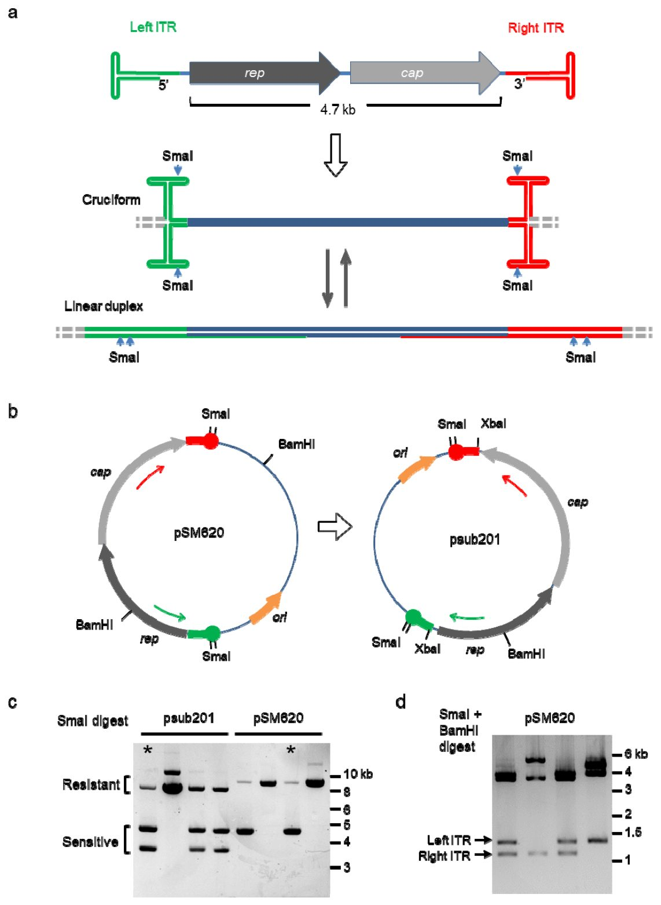
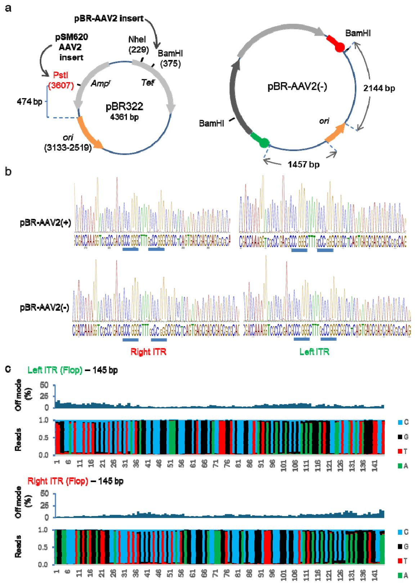
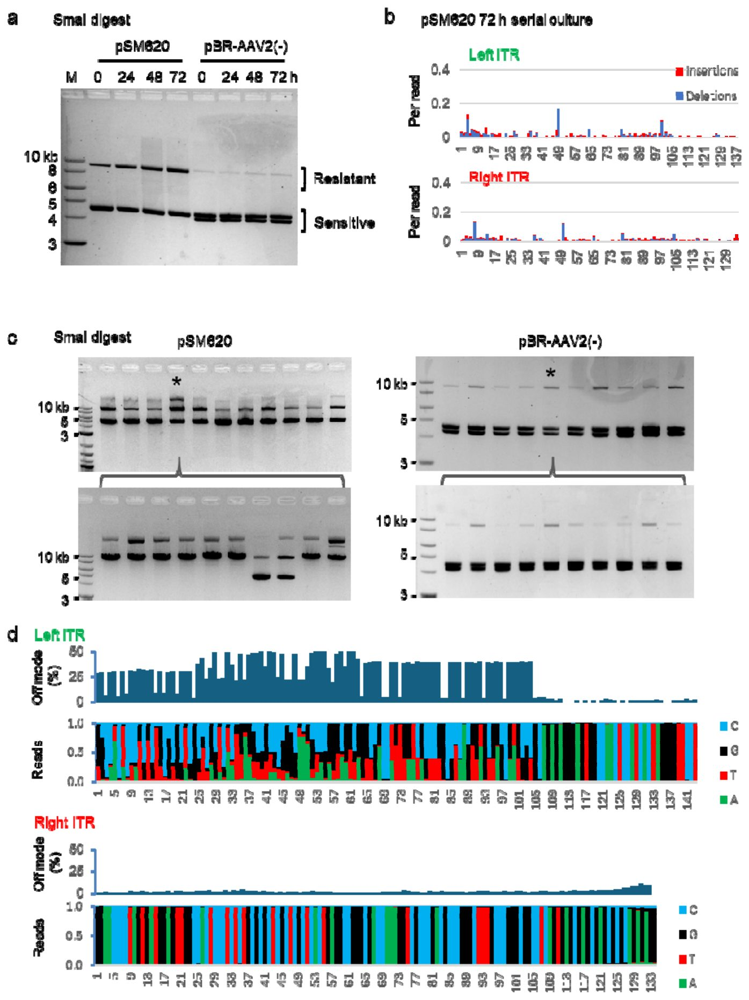
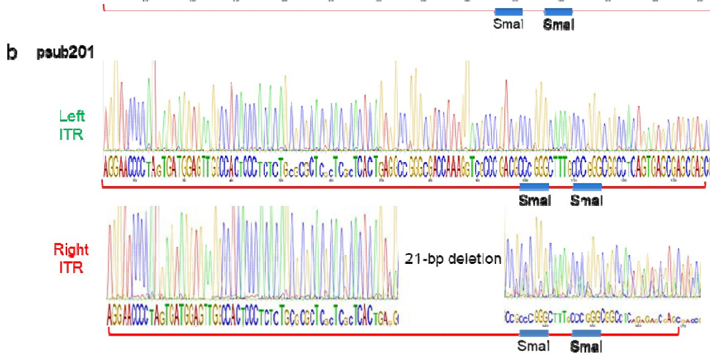
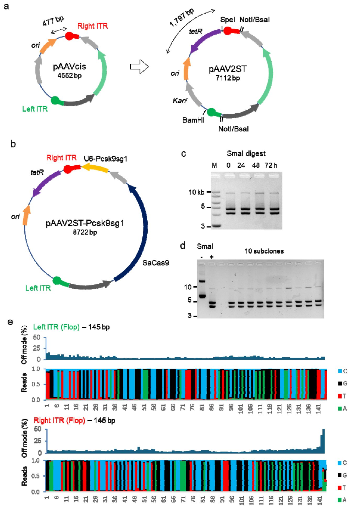
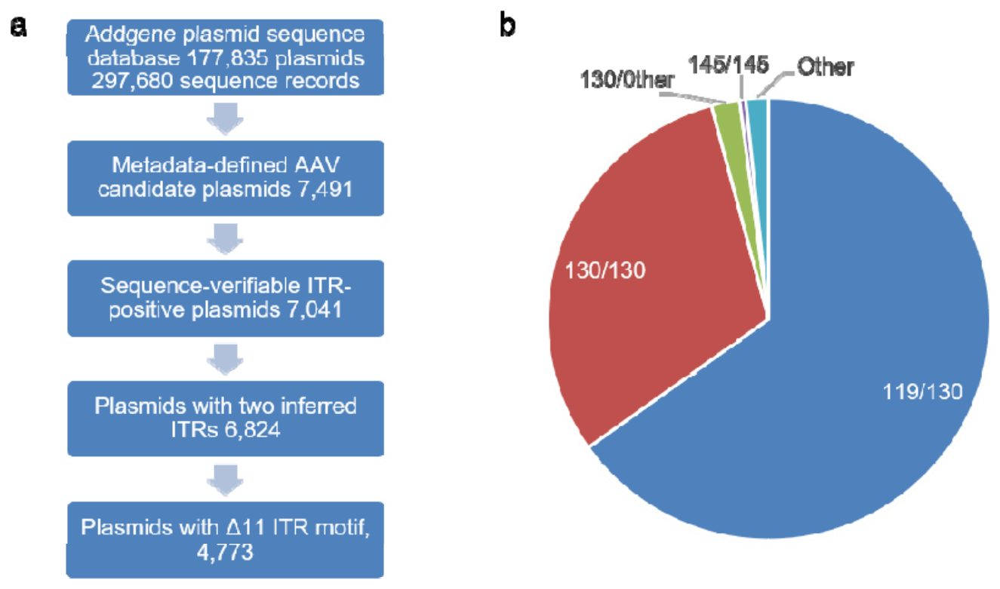
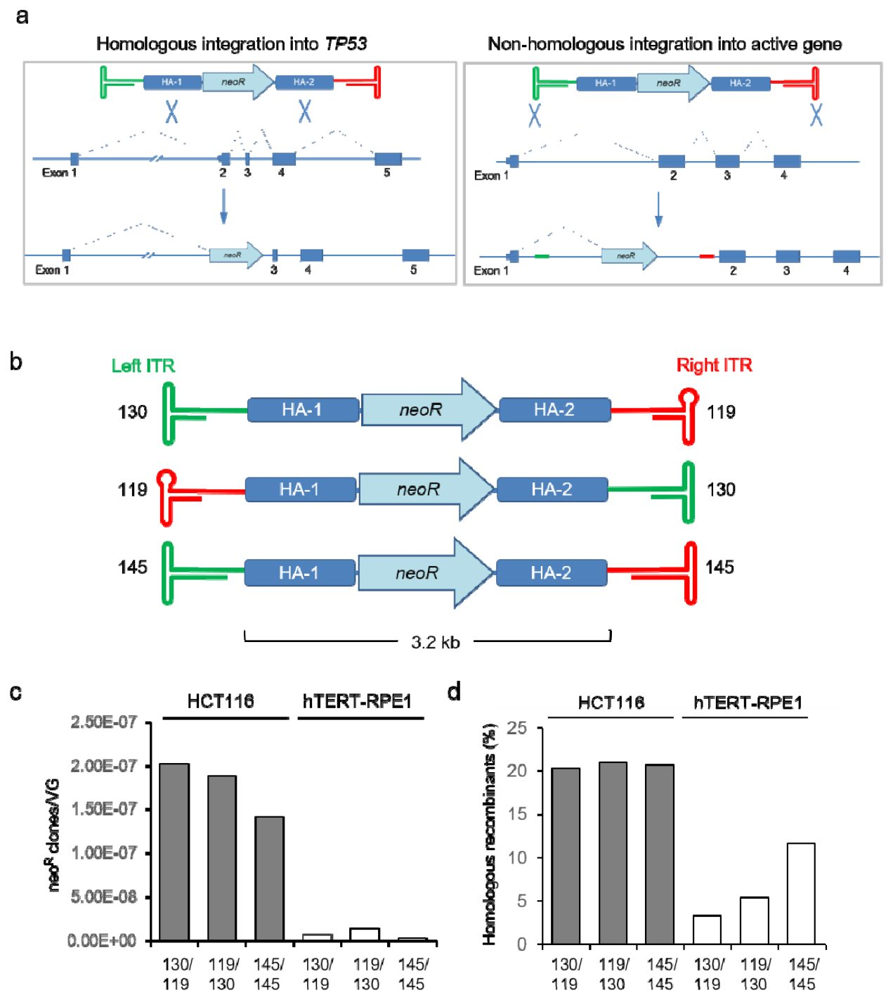

DNK konstruktoridagi bitta detal gen terapiyasi dori-darmonlari ishlab chiqarishni qanday buzadi


Rasmning to'liq tavsifi
1-rasm. Asl AAV2 plazmidalari. (a) Bir zanjirli AAV2 DNK genomi ITR bilan o'ralgan ikkita transkripsion birlik, rep va cap'dan iborat. Ikki zanjirli DNK kontekstida har bir ITR chiziqli yoki xochsimon tuzilmani hosil qilishi mumkin. (b) Asl AAV2 izolyati pSM620 psub201 ni hosil qilish uchun ishlatilgan. Yovvoyi turdagi 145-bp ITR klonlash jarayonida 130-bp gacha qisqartirilgan. Rep va cap genlarini o'rab turgan XbaI saytlari endogen genom elementlarini transgen kassetalar bilan almashtirishga imkon berdi. Sanger sekvenirovkasi uchun ishlatilgan praymerlarning nisbiy pozitsiyalari strelkalar bilan ko'rsatilgan. (c) SmaI bilan hazm qilish pSM620 va psub201 mos yozuvlar zaxiralaridan ajratilgan alohida klonlar orasida ITR geterogenligini aniqlaydi. (d) c panelida tahlil qilingan pSM620 klonlari o'chirilgan ITRni aniqlash uchun SmaI va BamHI bilan hazm qilindi.
Gen terapiyasi uchun preparatlar yaratish bakteriyalarda virusli xomashyoning beqarorligi tufayli koʻpincha lotereyani eslatadi. Davolovchi viruslarni yigʻish uchun zarur boʻlgan DNKning maxsus chekka tuzilmalari koʻpayish paytida doimiy ravishda mutatsiyaga uchraydi va qisqaradi. Tadqiqotchilar bu muammo plazmidalar — halqasimon DNK molekulalarining arxitekturasi bilan bevosita bogʻliqligini aniqlashdi. Plazmida ichidagi elementlarning oʻzaro joylashuvini oʻzgartirish terapevtik genni shikastlanishdan toʻliq himoya qilish imkonini beradi.
Asosiysi
- Gen terapiyasi plazmidalaridagi ITR takrorlanishlari replikatsiya boshlanish nuqtasiga yaqinligi sababli nukleotidlarini yoʻqotadi
- Addgene global repozitoriysidagi tekshirilgan plazmidalarning deyarli 68 foizida 11 juft nukleotidli yashirin mutatsiya mavjud
- Replikatsiya boshlanish nuqtasi va ITR oʻrtasidagi oddiy bufer kiritmasi koʻpayish paytida DNK konstruktsiyasini toʻliq barqarorlashtiradi
Batafsil
Rekombinant adeno-assotsiyalangan viruslar (rAAV) zamonaviy tibbiyotda genlarni yetkazib berishning asosiy vositasi boʻlib xizmat qiladi. Ular bakterial plazmidalar (halqasimon DNK molekulalari) yordamida ishlab chiqariladi, ularda maqsadli gen teskari chekka takrorlanishlar (ITR, T-simon hairpin tuzilmalarini hosil qila oladigan 145 nukleotidli DNK qismlari) orasiga joylashtiriladi. Murakkab fazoviy tuzilishi tufayli ITR ketma-ketliklari Escherichia coli bakteriyalarida replikatsiya (koʻpayish) paytida koʻpincha deletsiyaga (DNK qismlarining tushib qolishiga) uchraydi. Mualliflar Oxford Nanopore sekvenirlash maʼlumotlarini tahlil qilish uchun bioinformatik ish oqimini ishlab chiqdilar va turli plazmidalarda ITR barqarorligini oʻrgandilar.
7041 ta rAAV plazmidasini oʻz ichiga olgan Addgene maʼlumotlar bazasi tahlili shuni koʻrsatdiki, ulardan 4773 tasida 11 juft nukleotiddan iborat bir xil deletsiyalar mavjud. Maʼlum boʻlishicha, asosan plazmidaning replikatsiya boshlanish nuqtasiga (ori) yaqin joylashgan ITR mutatsiyaga uchraydi — 95,3% holatlarda nuqson aynan oʻsha yerda aniqlangan. Ushbu muammoni hal qilish uchun mualliflar pAAV2ST yangi vektor tizimini yaratdilar, unda ori nuqtasi beqaror takrorlanishdan 1320 juft nukleotidli bufer qismi orqali uzoqlashtirildi. Bu 4750 juft nukleotid oʻlchamidagi yirik CRISPR-Cas9 kassetasini yoʻqotishlarsiz koʻpaytirish va virus kapsidalariga joylash imkonini berdi.
Cheklovlar
Ushbu ish preprint shaklida chop etilgan va hali mustaqil taqrizdan oʻtmagan, ITR mutatsiyalarining hujayra DNKsiga integratsiyasiga taʼsiri esa hozircha faqat in vitro dastlabki testlarida koʻrsatilgan.
Maqolaning to'liq tarjimasi
Annotatsiya
Adeno-assotsiatsiyalangan viruslardan (rAAV) olingan rekombinant vektorlar inson gen terapiyasining asosi hisoblanadi. rAAV tarkibida teskari terminal takrorlanishlar (ITR) bilan chegaralangan transgen kassetalari bo'lgan plazmidalardan ishlab chiqariladi. Ushbu ITR'lar bir zanjirli virusli genomning uchlarini barqarorlashtiruvchi va genomni qadoqlash uchun zarur bo'lgan yagona cis-joylashuvdagi virusli ketma-ketliklardir. O'nlab yillar davomida ITR saqlovchi plazmidalarning ko'payishi deletsiyalar va boshqa mutatsiyalarga olib kelishi ma'lum bo'lib, bu maxsus bakterial shtammlar, modifikatsiyalangan o'stirish sharoitlari hamda qisqartirilgan yoki o'zgartirilgan ITR'lardan foydalanishga undagan. Ushbu amaliyotlarga qaramay, ITR beqarorligi plazmidalar geterogenligining doimiy manbai bo'lib qolmoqda.
Muhim
rAAV plazmidalaridagi ITR beqarorligi ularning arxitekturasiga bog'liq bo'lib, deletsiyalar ko'pincha replikatsiya boshlanish nuqtasiga eng yaqin joylashgan ITR'da sodir bo'ladi.
ITR barqarorligining determinantlarini aniqlash uchun biz dastlabki klonlangan AAV2 genom izolyatlaridan birida, qayta tiklangan AAV2 plazmidasida va to'liq uzunlikdagi tabiiy AAV2 ITR'larini o'z ichiga olgan sintetik rAAV vektorida ITR yaxlitligini baholadik. Biz Oxford Nanopore sekvenlash ma'lumotlari asosida ITR saqlovchi plazmidalar va virusli preparatlarni tahlil qilish uchun miqdoriy bioinformatik ish jarayonini yaratdik. Ushbu tajribalar ITR'larning qisqa muddatli kultivatsiya davomida yuqori darajada barqarorligini, uzoq muddatli kultivatsiya esa kuchli pozitsion effektlarni, xususan, plazmida replikatsiyasi boshlanish nuqtasiga eng yaqin ITR'ning yo'qolishi yoki mutatsiyasini ko'rsatdi.
Ushbu modelga muvofiq, Addgene repozitoriysidagi sekvenlash orqali tasdiqlangan 7 041 ta AAV plazmidasini o'rganish 4 773 ta plazmidada keng tarqalgan 11 bp uzunlikdagi ITR deletsiyasini aniqladi; tahlil qilinishi mumkin bo'lgan ikki ITR'li plazmidalar orasida bu deletsiya 95,3% hollarda replikatsiya boshlanish nuqtasiga yaqin ITR'da joylashgan. Ushbu topilmalarga asoslanib, biz barqaror to'liq uzunlikdagi tabiiy AAV2 ITR'lariga ega yangi rAAV vektorini yaratdik, bu 4 750 bp hajmdagi «all-in-one» CRISPR-Cas9 kassetasini samarali qadoqlash imkonini berdi. Nihoyat, biz ITR mutatsiyalarining rAAV genom integratsiyasiga ta'sirini solishtirish uchun hujayraviy strategiyani ishlab chiqdik va ITR ketma-ketligidagi o'zgarishlar integratsiya natijalariga ta'sir qilishi mumkinligi haqida dastlabki dalillarni taqdim etdik. Umuman olganda, ushbu topilmalar ITR beqarorligi plazmida arxitekturasining oldini olish mumkin bo'lgan, pozitsiyaga bog'liq xususiyati ekanligini ko'rsatadi va ITR yaxlitligini rAAV vektorlarini loyihalash va sifat nazoratida muhim o'zgaruvchi sifatida belgilaydi.
Kirish
Rekombinant adeno-assotsiatsiyalangan viruslar
Adeno-assotsiatsiyalangan virus serotipi 2 (AAV2) dan olingan rekombinant AAVlar gen terapiyasi uchun vektorlar sifatida keng qo'llaniladi. Modifikatsiyalanmagan AAV2 4,7 kb hajmdagi bir zanjirli DNK genomidan iborat bo'lib, u ~20 nm o'lchamdagi ikosaedral kapsid tomonidan yetkaziladi. Nativ genom teskari terminal takrorlar (ITR) bilan o'ralgan ikkita asosiy ochiq o'qish ramkasini kodlaydi. Ushbu 145 nt uzunlikdagi elementlar himoya qiluvchi T-simon dupleks tuzilmalarni hosil qiladi, ular ikkinchi zanjirli DNK sintezini boshlaydi va genom kapsidlanishi jarayonida qadoqlash signallari vazifasini bajaradi.
AAV2 virusli genomining 40 yildan ko'proq vaqt oldin muvaffaqiyatli klonlanishi rekombinant plazmidadan infeksion virusni ajratib olish imkonini berdi. ITRlar qadoqlash uchun cis-holatda talab qilinadigan yagona virusli elementlardir; qolgan virusli komponentlar transgen kassetalari bilan almashtirilishi mumkin. Ushbu «genomsiz» rekombinant genomlar zarur AAV va adenovirus genlarini trans-holatda kiritish orqali qadoqlanishi mumkin. Amalda, rAAV qadoqlash odatda AAV2 ITRlarini o'z ichiga olgan cis-plazmid vektorini komplementar AAV va adenovirus elementlarini ifodalovchi plazmidalar bilan kotransfeksiya qilish orqali amalga oshiriladi. Ayrim AAV serotiplarining turli tropizmidan foydalanish uchun tadqiqotchilar AAV2 ITRlari bilan o'ralgan transgenlarni turli xil tabiiy va muhandislik kapsidlariga muvaffaqiyatli qadoqlashdi, bu psevdotiplash deb ataladi. Tadqiqot va terapevtik maqsadlarda rAAV vektorlari bo'linadigan va bo'linmaydigan hujayralarni infeksiyalash qobiliyati, episomal turg'unligi va xavfsizlik profili tufayli qadrlanadi.
Muhim
AAV2 asosidagi rAAV vektorlari turli tropizmga ega kapsidlarga transgenlarni qadoqlash qobiliyati tufayli gen terapiyasining standarti hisoblanadi, biroq ularni ishlab chiqarish tarkibiy geterogenlik muammolariga duch keladi.
Ishlab chiqarish muammolari va rAAV geterogenligi
Ko'plab texnologik yutuqlarga qaramay, rAAVni keng ko'lamli ishlab chiqarishda jiddiy muammolar saqlanib qolmoqda. Gomogenlik va takrorlanuvchanlik klinik qo'llash uchun ayniqsa muhim omillardir. rAAV ishlab chiqarishda ishlatiladigan reagentlar va usullarni standartlashtirish bo'yicha doimiy sa'y-harakatlarga qaramay, alohida virusli preparatlar ichidagi geterogenlik va preparatlar o'rtasidagi o'zgaruvchanlik muammoli bo'lib qolmoqda. Virusli stoklar odatda funksional virionlar va nuqsonli zarrachalarning o'zgaruvchan aralashmasidan iborat. rAAVning funksional bo'lmagan zarrachalari ulushi preparatlar o'rtasida sezilarli darajada farq qilishi mumkin va odatda bo'sh kapsidlar hamda deliyalar yoki ifloslantiruvchi ketma-ketliklarga ega bir zanjirli DNK genomlarini o'z ichiga olgan virionlarni o'z ichiga oladi. Klinik foydalanish uchun nuqsonli zarrachalar samaradorlikni pasaytirishi va davolash bilan bog'liq toksiklikni oshirishi mumkin.
rAAV preparatlaridagi muhim ifloslantiruvchilardan biri cis-plazmidaning o'zagidir. Funksional bo'lmagan virionlar teskari qadoqlash deb nomlanuvchi hodisa orqali hosil bo'lishi mumkin, bunda kerakli insert o'rniga plazmidaning o'zagi qadoqlanadi va bitta ITRga ega bo'lgan snapback-genomlar deb ataladigan tuzilmalar hosil bo'ladi. Snapback-genomlar o'ralgan transgen tashqarisidagi ITRga o'xshash ketma-ketliklardan kelib chiqishi ko'rsatilgan, ular aslida replikaza kompleksi uchun yashirin ruxsat saytlarini yaratadi.
rAAV preparatlaridagi geterogenlikning yana bir potentsial manbai ularni ishlab chiqarish uchun ishlatiladigan rAAV cis-plazmid stoklarining bir xil emasligidir. Standart cis-plazmidalarda ko'paytiriladigan AAV ITRlarining beqaror bo'lish tendentsiyasi yaxshi hujjatlashtirilgan. Kengroq ma'noda, yuqori tuzilmali virusli ketma-ketliklar va ko'plab turdagi takrorlanuvchi elementlar rekombinant plazmid vektorlarida ko'paytirilganda ko'pincha deliyalar va boshqa turdagi mutatsiyalarni to'playdi. ITR beqarorligi odatda ularning palindromik tuzilishi va yuqori GC miqdori bilan bog'liq deb hisoblanadi, bu ularni ayniqsa sochsimon tuzilmalar hosil qilishga va replikatsiya to'xtashlariga moyil qiladi. ITR mutatsiyalari rAAV qadoqlash samaradorligini, hosildorligini va in vivo samaradorligini buzishi mumkin. ITR nuqsonlarini minimallashtirish uchun ishlab chiqaruvchilar odatda turli xil modifikatsiyalangan kultivatsiya sharoitlaridan, masalan, pasaytirilgan haroratda o'stirishdan foydalanadilar va ixtisoslashgan shtammlarni qo'llaydilar. Ushbu choralarga qaramay, takrorlanuvchi elementlarning barqaror ko'payishi muammoli bo'lib qolmoqda.
Izoh
ITR (teskari terminal takrorlar) — bu virus genomining uchlari bo'lib, ular replikatsiya va virusli DNKni qadoqlash uchun zarur bo'lgan ikkilamchi tuzilmalarni (sochsimon tuzilmalar) hosil qiladi.
Plazmida konfiguratsiyasining ITR barqarorligiga ta'siri
AAV2 ni qutqarish bo'yicha eng dastlabki tajribalarga retrospektiv nazar shuni ko'rsatadiki, ikkita ITR plazmid vektorlarida ko'paytirilganda mutatsiyaga moyilligi bo'yicha farq qiladi. Ikkita ITRning replikatsiya boshlanishiga nisbatan joylashuvi ITR beqarorligiga hissa qo'shishi taxmin qilingan. Ushbu tadqiqotda biz plazmida konfiguratsiyasi AAV2 izolatlarida va sintetik rAAV vektorlarida ITR beqarorligiga qanday ta'sir qilishini batafsil o'rganishga imkon beradigan ish jarayonini o'rnatdik. Ham past nusxali, ham yuqori nusxali vektorlarda ITR barqarorligi ITRlarning plazmida replikatsiya boshlanishiga nisbatan joylashuvi bilan bog'liqligi aniqlandi. Oddiy vektor modifikatsiyasi ushbu pozitsion effektni yo'q qildi va plazmida barqarorligini tikladi.
Muhim
Plazmidalardagi ITR barqarorligi ularning replikatsiya boshlanish nuqtasiga nisbatan joylashuviga bog'liq; ushbu konfiguratsiyani o'zgartirish beqarorlikni butunlay bartaraf etish imkonini beradi.
Natijalar
ITRlarning dastlabki AAV2 plazmidalaridagi tavsifi
Tabiiy AAV2 genomini klonlash dastlab bir zanjirli genomni ikki zanjirli plazmida insertiga aylantirishni talab qilgan. Bu shaklda ITRlar oʻz-oʻzidan oʻralib, xochsimon tuzilishga ega boʻlishi yoki komplementar DNK zanjiri bilan chiziqli dupleks hosil qilishi mumkin (1a-rasm). AAV2 insertidan tashqaridagi plazmida elementlari ushbu strukturaviy muvozanatga qanday taʼsir qilishi yoki ITR barqarorligiga boshqacha taʼsir koʻrsatishini aniqlash uchun biz birinchi klonlangan AAV2 izolatlaridan biri boʻlgan pSM620 plazmidasini oʻrgandik. Shuningdek, biz pSM620 hosilasi boʻlgan psub201 plazmidasini tekshirdik, u ikkita ITR oʻrtasidagi butun hududni transgen yuk bilan almashtirishga imkon beruvchi XbaI restriksiya saytlarini oʻz ichiga oladi (1b-rasm). psub201 plazmidasi hozirda rAAV ishlab chiqarish uchun keng qoʻllaniladigan koʻplab gutless vektorlarining peshqadami boʻlgan.
Muhim
pSM620 va psub201 plazmidalarini tahlil qilish ITRlarning strukturaviy beqarorligini aniqladi: 8 ta izolatdan 3 tasi SmaI restriksiyasiga chidamli ITRlarni oʻz ichiga olgan, bu esa ketma-ketlikdagi deletsiyalar yoki shikastlanishlarni koʻrsatadi.
pSM620 va psub201 DNKlarining nazorat namunalari bakterial transformatsiya va alohida koloniyalarni ekish yoʻli bilan kuchaytirildi. Har bir idishdan tasodifiy ravishda toʻrtta koloniya tanlab olindi va kichik hajmda bir kecha davomida oʻstirildi. Ekstraksiya qilingan DNKlar dastlab restriksion tahlil usuli bilan tahlil qilindi. Har bir ITR SmaI restriktazasi uchun ikkita tanib olish saytini oʻz ichiga oladi (1a-rasm), u odatda ITR yaxlitligini baholash uchun ishlatiladi. Sakkizta plazmida izolatidan uchtasi SmaIga chidamli ITRni oʻz ichiga olgan (1c-rasm). pSM620 subklonlarining qoʻsh restriksion tahlili shuni koʻrsatdiki, nuqsonli ITRga ega boʻlgan ikkita klonning har biri bitta shikastlangan ITRni saqlab qolgan (1d-rasm).
SmaI bilan toʻliq parchalanishi mumkin boʻlgan pSM620 va psub201 izolatlar keyinchalik Sanger sekveniroviyasi usuli bilan baholandi. AAV ITRlarining ikkilamchi tuzilishi uzoq vaqt davomida ularni sekveniroviya qilishda toʻsiq boʻlib kelgan, ammo takomillashtirilgan usullar endilikda GC-boy shpilkalar va boshqa yuqori tuzilgan ketma-ketlik motivlari orqali praymerlarni ishonchli uzaytirishga imkon beradi. AAV2 genomida oʻralgan praymerlardan foydalanib (1b-rasm), biz har ikkala plazmidada ikkala ITRda ham SmaI saytlari mavjudligini tasdiqladik. Biroq, bir xil praymerlar ishlatilganiga qaramay, har bir plazmidadagi ITRlar oʻrtasida ketma-ketlik sifati turlicha boʻlgan. pSM620 matritsasi oʻng ITR uchun yuqori sifatli ketma-ketlikni berdi, shu bilan birga chap ITR uchun asoslarni aniqlash ishonchliligi doimiy ravishda pastroq boʻldi (2a-rasm). psub201 plazmidasi uchun teskari holat kuzatildi; bu holda oʻng ITR nisbatan past sifatli ketma-ketlik maʼlumotlarini berdi, ammo shunga qaramay, 21 bp oʻlchamdagi deletsiyani aniqlash uchun yetarli boʻldi (2b-rasm).
Izoh
Sanger sekveniroviyasi — zanjir terminatorlaridan foydalanishga asoslangan DNK ketma-ketligini aniqlash usuli boʻlib, GC-boy hududlarni aniq oʻqish uchun yuqori sifatli matritsani talab qiladi.
Plazmida matritsasining geterogen ketma-ketliklari deb hisoblangan narsalarni dekonvolyutsiya qilish uchun pSM620dagi ITR elementlari uzoq oʻqishli DNK sekveniroviyasi yordamida alohida molekulalar darajasida qoʻshimcha ravishda tavsiflandi. Minimal sifat chegarasidan oʻtgan Nanopore oʻqishlari har ikkala ITR boʻylab gomogen boʻlgan (3a, b-rasm). Ushbu tahlil 143 bp oʻlchamdagi chap ITR va 136 bp oʻlchamdagi oʻng ITRni aniqlashga imkon berdi, ikkalasi ham flop yoʻnalishida. Chap ITRning 5’-uchida ikkita asos, oʻng ITRning 3’-uchida esa toʻqqizta asos yetishmagan. Oʻqishlarning kichik bir qismi kichik indel-larni oʻz ichiga olgan, ular chap ITRning 5’-uchida eng yuqori chastotada uchraydi (3a-rasm). Umuman olganda, ITR hududlari eng yuqori darajadagi geterogenlikni namoyon etdi, bu esa oʻqishlar qoplamasidagi xato asos chaqiruvlari bilan tasdiqlanadi (3c-rasm).
pSM620 ning qayta konfiguratsiyasi
Sanger xromatogrammalarining asimmetrik sifati pSM620 matritsasining asosiy ketma-ketligida aks etmaganligi sababli, chap ITR dan Sanger sekvenirlash sifatining pastligi praymer elongatsiyasidagi strukturaviy to‘siqlar bilan bog‘liq bo‘lishi mumkinligini tekshirdik. pSM620 da ham, psub201 da ham zararlangan ITR plazmidaning replikatsiya boshlanish nuqtasi (ori) yonida joylashgan edi (Rasm 1b). ColE1 turidagi replikatsiya boshlanish nuqtasi bo‘lgan pMB1 ori elementi plazmida nusxalari sonini boshqaruvchi ikkita qisqa RNK ni ifodalaydi. Biz ushbu yuqori darajada strukturalangan RNK lar matritsa elementlariga yaqinlik sekvenirlash ma'lumotlaridagi nomuvofiqlikka sabab bo‘lishi mumkinmi degan savolni o‘rtaga tashladik.
Rasmning to'liq tavsifi
1-rasm. Asl AAV2 plazmidalari. (a) Bir zanjirli AAV2 DNK genomi ITR bilan o'ralgan ikkita transkripsion birlik, rep va cap'dan iborat. Ikki zanjirli DNK kontekstida har bir ITR chiziqli yoki xochsimon tuzilmani hosil qilishi mumkin. (b) Asl AAV2 izolyati pSM620 psub201 ni hosil qilish uchun ishlatilgan. Yovvoyi turdagi 145-bp ITR klonlash jarayonida 130-bp gacha qisqartirilgan. Rep va cap genlarini o'rab turgan XbaI saytlari endogen genom elementlarini transgen kassetalar bilan almashtirishga imkon berdi. Sanger sekvenirovkasi uchun ishlatilgan praymerlarning nisbiy pozitsiyalari strelkalar bilan ko'rsatilgan. (c) SmaI bilan hazm qilish pSM620 va psub201 mos yozuvlar zaxiralaridan ajratilgan alohida klonlar orasida ITR geterogenligini aniqlaydi. (d) c panelida tahlil qilingan pSM620 klonlari o'chirilgan ITRni aniqlash uchun SmaI va BamHI bilan hazm qilindi.
pSM620 plazmidasi dastlab tozalangan AAV2 genomini terminal gomopolimerli dum qo‘shish usulini o‘z ichiga olgan tutib olish strategiyasi orqali pBR322 ning PstI saytiga kiritish yo‘li bilan olingan. Dastlabki pBR322 plazmidasidagi kiritish sayti pMB1 ori elementidan 500 b.j. dan kam masofa bilan ajratilgan (Rasm 4a). Replikatsiya boshlanish nuqtasining qo‘shni ITR larga ehtimoliy joylashuv ta'sirini o‘rganish uchun biz NheI va BamHI bilan fermentativ kesilgan pBR322 vektoriga AAV2 kassetasini kiritish orqali yangi plazmidalar yaratdik. Olingan pBR-AAV2(+) va pBR-AAV2(-) plazmidalari har ikkala yo‘nalishda to‘liq AAV2 genomini, shu jumladan ikkita 145 b.j. li ITR ni o‘z ichiga olgan. Yangi joylashtirilgan va to‘liq tiklangan ITR lar pMB1 replikatsiya boshlanish nuqtasidan 1457 b.j. yoki 2144 b.j. masofada joylashgan edi (Rasm 4a).


Rasmning to'liq tavsifi
4-rasm. pSM620 ning qayta ko'rib chiqilishi. (a) Asl AAV2 izolyati pSM620 klonlash vektori pBR322 ning PstI saytida ushlandi, shu bilan ampitsillinga chidamlilik genini buzdi. ITRlarning ori elementi (to'q sariq strelka) ga nisbatan joylashuvini o'zgartirish uchun AAV2 genomi ko'rsatilgandek NheI-BamHI qo'shimchasi sifatida qayta qurildi. Olingan pBR-AAV2(-) plazmidasi ori elementining yo'nalishiga nisbatan pSM620 bilan bir xil yo'nalishdagi qo'shimchaga ega. Ikkinchi plazmid, pBR-AAV2(+), teskari yo'nalishdagi AAV2 qo'shimchasini o'z ichiga oladi va ko'rsatilmagan. Qavs ichidagi raqamlar pBR322 dagi nukleotid pozitsiyalariga tegishli. (b) Sanger sekvenirovkasi 1b-rasmda ko'rsatilgan praymerlar bilan amalga oshirildi. Har bir pozitsiyadagi asosiy chaqiruvning ishonchliligi harf balandligi bilan ko'rsatilgan. SmaI tanib olish saytlari tagiga chizilgan. (c) pBR-AAV2(-) ning chap va o'ng ITRlari bo'ylab nanopor sekvenirovkasini to'plash tahlili.
Izoh
ITR (teskari terminal takrorlar) barqaror soch to‘g‘nog‘ichsimon strukturalarni hosil qiladi va ularning ori elementi regulyator RNKlariga haddan tashqari yaqin bo‘lishi polimerazalar va replikatsiyaga xalaqit berishi mumkin.
pBR-AAV2(+) va pBR-AAV2(-) dagi ITR lar pSM620 va psub201 ni tahlil qilishda ishlatilgan bir xil praymerlar va sharoitlarda Sanger sekvenirlash yordamida baholandi. Har ikkala ITR ham AAV2 kassetasining yo‘nalishidan qat'i nazar, Sanger xromatogrammalarida aniq ajratildi (Rasm 4b). ONT ma'lumotlarini qatlamlash tahlili har ikkala ITR bo‘ylab heterogenlikning past darajasini ko‘rsatdi (Rasm 4c).
So‘ngra biz uzoq muddatli kultivatsiya paytida ITR barqarorligini baholadik. Biz pSM620 va AAV2 kassetasi replikatsiya boshlanish nuqtasiga nisbatan bir xil yo‘nalishda joylashgan pBR-AAV2(-) ni taqqosladik (Rasm 4a). SmaI bilan kesish tahlili shuni ko‘rsatdiki, har ikkala plazmida ham 72 soatlik vaqt davomida strukturaviy jihatdan butun qoldi, hech qanday ko‘rinadigan yo‘qotishlar (deletsiya) yoki qayta tuzilishlar kuzatilmadi (Rasm 5a). Garchi barcha to‘rtta tanish sayti DNK sekvenirlash orqali tasdiqlangan bo‘lsa-da (Rasm 4b), SmaI fermenti pSM620 plazmidasini to‘liq kesishga muntazam ravishda qodir bo‘lmadi. Bundan tashqari, pSM620 ning uzoq muddatli kultivatsiyasi SmaI ga chidamli DNK ning nisbiy ulushining o‘rtacha oshishiga sabab bo‘lgandek ko‘rindi (Rasm 5a). 72 soatlik kulturadan ajratilgan pSM620 DNK ning uzun o‘qishli sekvenirlash ma'lumotlari chap ITR ning 5’-uchidan 6 b.j. yo‘qolganini ko‘rsatdi, ammo aks holda plazmidalarning subklonal populyatsiyalari kengayishi haqida hech qanday dalil bermadi (Rasm 5b).


Rasmning to'liq tavsifi
5-rasm. Uzoq muddatli kultivatsiya davomida AAV2 plazmidalarining barqarorligi. (a) Suyuq bakterial kulturalar 72 soat davomida uzluksiz inkubatsiya qilindi. 24 soatlik intervallar bilan har bir kulturaning alikvoti yangi o'sish muhitiga 1:1000 nisbatda ketma-ket suyultirildi. Har bir vaqt nuqtasida olingan DNKlar SmaI bilan hazm qilindi. (b) 72 soatlik uzluksiz kultivatsiyadan so'ng pSM620 dagi chap va o'ng ITRlar bo'ylab qo'shimchalar va o'chirishlar tahlili. (c) 72 soatlik kulturalar yangi plitalarga ekildi va 10 ta koloniya tungi kulturalarda alohida kengaytirildi. Olingan plazmid DNKlari SmaI bilan hazm qilindi. Yulduzchalar (*) bilan belgilangan kulturalar subklonal tahlilning ikkinchi bosqichi uchun ekildi. (d) c panelida ko'rsatilganidek, pSM620 4-klonining chap va o'ng ITRlari bo'ylab nanopor sekvenirovkasini to'plash tahlili.
Uzoq muddatli kultivatsiya paytidagi barqarorlikni chuqurroq o‘rganish uchun biz 72 soatlik DNK namunalaridan bakteriyalarni transformatsiya qilishda foydalandik va so‘ngra 10 ta tasodifiy dori vositasiga chidamli koloniyani alohida-alohida o‘stirdik. Ajratib olingan DNK lar SmaI bilan kesish orqali tekshirildi va subklonlar orasida o‘zgaruvchanlik borligi aniqlandi (Rasm 5c). Kesilmagan DNK ning eng katta ulushiga ega bo‘lgan pSM620 izolati (klon 4) keyinchalik yana subklonlandi. SmaI bilan kesish manzarasi ushbu subklonlar orasida ITR yo‘qolishining (deletsiyasining) yuqori darajasini ko‘rsatdi. Aksincha, pBR-AAV2(-) dan olingan subklonlar, hatto subklonlash va o‘stirishning ikkinchi bosqichidan keyin ham nisbatan gomogen bo‘lib qoldi (Rasm 5c). Klon 4 plazmida populyatsiyasidagi heterogenlik uzun o‘qishli sekvenirlash orqali osonlikcha aniqlandi (Rasm 5d) va to‘liq ravishda chap, ori-ga yaqin bo‘lgan ITR ga lokalizatsiya qilindi.
Muhim
pBR-AAV2(-) plazmidasida ITR ni replikatsiya boshlanish nuqtasidan 1,4 ming b.j. dan ko‘proq masofaga siljitish takrorlarni barqarorlashtirdi va pSM620 ni qayta klonlashda ko‘plab yuzaga kelgan deletsiyalarning oldini oldi.
Yuqori nusxali plazmidada 145 j.j. ITR’larning barqarorligi
Bugungi kunda keng qo'llaniladigan rAAV vektorlari plazmidalarni yuqori nusxa sonida saqlashga imkon beruvchi mutatsiyalangan pMB1 replikatsiya orijiniga ega. Yuqori nusxali plazmida sharoitida ITR barqarorligini baholash uchun biz de novo cis-vektorini yaratdik. 145 j.j. o'ng ITR va 145 j.j. chap ITR pUC57 karkasidada alohida sintez qilindi, ularning ikkala konformatsiyasi ham pSM620 konformatsiyasiga mos kelishi uchun flop yo'nalishida tanlandi. Keyinchalik ushbu ikki plazmida yordamida pAAVcis cis-plazmidasi yig'ildi, unda yashil flyuoressent oqsil (GFP) ekspressiya kassetasi ikkita ITR bilan o'rab olingan (6a-rasm).
pUC seriyasidagi klonlash vektorlari yuqori nusxali pMB1 orijini yaqinida joylashgan ko'p martalik klonlash saytiga ega. pUC57-KAN’dan olingan pAAVcis’da plazmida orijini o'ng ITR kiritish saytidan 477 j.j. masofa bilan ajratilgan (6a-rasm). pBR322 asosidagi plazmidalarni tahlil qilishda qo'llanilgan iterativ subklonlash strategiyasidan foydalanib, biz ITR deletsiyalariga ega pAAVcis klonlarini ajratib oldik. ITR barqarorligi va pAAVcis plazmida populyatsiyasining bir jinsliligini baholash uchun biz transformatsiyalangan bakteriyalarni cheklangan suyultirishda ekdik va keyingi tahlillar uchun 10 ta kanamitsinga chidamli subklonlarni ko'paytirdik (6b-rasm). SmaI bilan gidroliz qilish pAAVcis subklonlari orasida SmaI-sezgir va SmaI-chidamli DNKning har xil nisbatlariga ega bo'lgan yaqqol farqlarni ko'rsatdi.
Muhim
> Yuqori nusxali pAAVcis plazmidasida uzoq vaqt o'stirilganda, replikatsiya orijiniga yaqin joylashgan o'ng ITR o'z-o'zidan ~27% invertatsiyalangan flip-izomerlarini hosil qilib divergensiyaga uchraydi, olisdagi chap ITR esa barqaror flop-konformatsiyasini saqlab qoladi (>99%).
Haddan tashqari ko'p gidrolizlanmagan material bergan bitta klon (7-klon; 6b-rasm) nanopor sekvenirlash usuli bilan qo'shimcha ravishda baholandi. Chap ITR bo'ylab olingan o'qishlar nisbatan bir jinsli edi, biroq ori-tutash o'ng ITR’ga xaritalangan o'qishlar orasida sezilarli ketma-ketlik geterogenligi kuzatildi (6c-rasm). Qiziqarlisi, ketma-ketlik tahlili o'ng ITR sohasida flip va flop izomerlarining aralashmasini aniqladi. pSM620 ning flip-flop konfiguratsiyasidan farqli o'laroq, pAAVcis’dagi ikkala ITR ham flop yo'nalishida yaratilgan va shuning uchun bir xil edi. Uzoq davom etgan ko'paytirishdan so'ng, plazmida molekulalarining taxminan 27% ori-yaqin o me'yoriy o'ng ITR’ning ichki halqasida aniq ketma-ketlik variantini saqladi, bunda ichki halqadagi 17 ta informativ pozitsiyaning har biri flip yo'nalishiga ega kichik populyatsiyani ko'rsatdi (6c-rasm). Aksincha, orijindan uzoqdagi chap ITR gomoogen ravishda flop yo'nalishida qoldi (tegishli pozitsiyalarda < 1% flip). Ushbu ma'lumotlar shuni ko'rsatadiki, sof pAAVcis plazmida populyatsiyasi orijinga yaqin ITR’da flip va flop ITR konfiguratsiyalarining paydo bo'lishi bilan aralashmaga ajralgan. Butun rAAV kassetasi bo'ylab o'tkazilgan tahlil geterogenlikning alohida pik nuqtasi aynan o'ng ITR ichida joylashganini ko'rsatdi (6d-rasm).
Izoh
> Nanopor sekvenirlash — DNK yoki RNKning tekis molekulalarini membranadagi oqsil g'ovaklari orqali o'tishi paytida real vaqt rejimida o'qish usuli bo'lib, U PCR-amplifikatsiyasiz strukturaviy o'zgarishlar va izomerlarning aralash variantlarini aniqlashga imkon beradi.
pAAV2ST: barqarorlashtirilgan rAAV klonlash vektori
Keyin biz pAAVcis plazmidasidagi o'ng ITR’ni replikatsiya orijiniga nisbatan masofani oshirish orqali barqarorlashtirish mumkinligini tekshirdik. pBR322 dagi tetratsiklinga chidamlilik genini o'z ichiga olgan 1 797 j.j. uzunlikdagi DNK fragmenti pAAV2ST kirish vektorini hosil qilish uchun o'ng ITR va orijin orasiga joylashtirildi (7a-rasm). Terapevtik gen ko'chirish uchun mo'ljallangan odatiy rAAV’ga ko'proq o'xshash konstruktsiyaning barqarorligini baholash uchun biz GFP ekspressiya kassetasini o'z ichiga olgan 1 569 j.j. NotI qo'shimchasini ilgari Feng Zhang va uning hamkasblari tomonidan sichqoncha Pcsk9 lokusini in vivo inaktivatsiya qilish uchun ishlab chiqilgan "barchasi birda" CRISPR/SaCas9 tizimi bilan almashtirdik (17). Natijada hosil bo'lgan pAAV2ST-Pcsk9sg1 plazmidasining umumiy hajmi 8 722 j.j. ni tashkil etdi (7b-rasm).
Ehtiyot bo'ling
> pAAV2ST vektorining barqarorligi bakterial kulturalarda ko'paytirish va adeno-assotsiatsiyalangan virus kapsidlariga joylash jarayonida tasdiqlangan, ammo uning funksional samaradorligi va xavfsizligi in vivo sharoitda qo'shimcha tekshirishni talab qiladi.
pAAV2ST-Pcsk9sg1 vektori SmaI bilan deyarli to'liq gidrolizlandi va ketma-ket o'stirish davomida tarkibiy jihatdan barqaror bo'lib ko'rindi (7c-rasm). Qadoqlash uchun katta miqyosda tayyorlangan plazmida DNK namunasi asosan o'ta spirallashgan shaklda bo'lib, chiziqli shakllar aniqlanmadi (7d-rasm). Ushbu populyatsiyadan olingan subklonlar SmaI gidrolizidan so'ng, ilgari pBR-AAV2(-) da kuzatilganidek, yuqori molekulyar og'irlikdagi DNKning past ulushini ko'rsatdi. Ushbu yuqori darajada kuchaytirilgan preparatning nanopor sekvenirlanishi mutatsiyaga uchragan kichik populyatsiyalarni aniqlamadi. Ikkala ITR ham o'ng ITR’ning 3' uchidagi fokal sohadan tashqarida bir jinsli bo'lib ko'rindi (7e-rasm).
pAAV2ST-Pcsk9sg1 plazmida kassetasi standart usullardan foydalangan holda tijorat yetkazib beruvchisi tomonidan AAV8 kapsidlariga qadoqlandi. Yetkazib beruvchi tomonidan o'tkazilgan kPCH-asosli sifat nazorati tahliliga ko'ra, jami 5,61E+13 virus genomi qadoqlandi, bu 1,0E+13 texnik talabidan ancha yuqori edi. Tozalashdan so'ng, massa-fotometriyasi orqali ikkita asosiy zarrachalar populyatsiyasi ajratildi. Bo'sh kapsidlarni ifodalovchi 3 700 kDa piki populyatsiyaning 29,5% ini tashkil etdi; zarrachalarning 70,3% i 5 200 kDa pikida ajratilgan to'liq kapsidlar edi (8a-rasm). Keyin biz o'z laboratoriyamizda salbiy bo'yash va TEM yordamida alohida kapsidlarni vizualizatsiya qildik (8b-rasm). Ushbu tahlil kapsidlarning 79,7 ± 3,0% to'liq va 20,2 ± 3,0% bo'sh ekanligini ko'rsatdi.
Muhim
> pAAV2ST vektori AAV8 kapsidlariga qadoqlanganda to'liq hajmli virus genomining yuqori unumdorligini ta'minladi (5,61E+13 genom; massa-fotometriya va TEM ma'lumotlariga ko'ra ~70–80% to'liq kapsidlar), bunda kapsidlangan DNKning >98% qismi aniq to'liq transgen kassetasiga mos keldi.
Nativ kapsidlangan DNKning yaxlitligi yangi ishlab chiqilgan ish ketma-ketligidan foydalangan holda to'g'ridan-to'g'ri nanopor sekvenirlash orqali baholandi. Olingan o'qishlarning 98% dan ortig'i transgen kassetasiga xaritalandi (8c-rasm) va hajmi bo'yicha pAAVST-Pcsk9sg1 kassetasining to'liq uzunligiga mos keldi (8d,e-rasm).
Keng tarqalgan ITR mutatsiyasi
ITR beqarorligining muhim oqibati mutant subpopulyatsiyalarning klonal kengayishidir. ITRdagi 11 bp (juft asos) oʻchirilishi (bundan buyon matnda Δ11 deb ataladi) ilgari keng tarqalgan pAAV-MCS vektorida aniqlangan edi. Radukic va boshqalar tomonidan Addgene repozitoriysidagi ketma-ketligi tasdiqlangan rAAV plazmidalari boʻyicha oʻtkazilgan yaqindagi tadqiqot shuni koʻrsatdiki, ichki oʻchirilgan ITRlar keng tarqalgan. Biz Addgene’ga topshirilgan barcha plazmidalar orasida maxsus Δ11 ITR mutantining tarqalishini aniqlashga va bu mutatsiya bakterial replikatsiya boshlanishi (ori) bilan izchil pozitsion bogʻliqlikni koʻrsatadimi yoki yoʻqligini bilishga harakat qildik.
Addgene plazmid repozitoriysidagi ITR ketma-ketliklarini baholash uchun koʻp bosqichli bioinformatik quvur liniyasi oʻrnatildi (9a-rasm). Ketma-ketlik maʼlumotlari taxminan 1,34 Gb plazmid ketma-ketligini oʻz ichiga olgan keng qamrovli ommaviy Addgene yuklamasidan olingan. Metamaʼlumotlarga asoslangan skrining 7 491 ta AAV bilan bogʻliq nomzod plazmidani aniqladi, ular keyinchalik ketma-ketlik darajasidagi ITR aniqlash orqali baholandi. Ushbu tahlil kamida bitta aniqlanadigan AAV ITR ga ega 7 041 ta plazmidani aniqladi. Ketma-ketligi tekshirilishi mumkin boʻlgan AAV plazmidalarining aksariyati ikkita taxminiy ITRni oʻz ichiga olgan: 6 824 ta plazmid ikki ITRli vektorlar, 213 tasi bir ITRli vektorlar va 4 tasi uch ITRli yozuvlarga oʻxshash vektorlar sifatida tasniflangan. Jami 13 873 ta ITR chaqiruvidan 13 752 tasi (99,1%) flop izomerlari va (0,9%) flip izomerlari sifatida tasniflangan.
Muhim
Δ11 mutatsiyasi tahlil qilingan ITR-musbat plazmidalarning 67,8%ida aniqlangan, bunda 95,3% hollarda u bakterial replikatsiya boshlanishiga eng yaqin boʻlgan ITRda joylashgan.
Keyinchalik biz Δ11 mutatsiyasiga mos keladigan 34 bp ketma-ketligi uchun mustaqil aniq-motif qidiruvini amalga oshirdik. Ushbu qidiruv kamida bitta aniq Δ11 motifiga ega 4 773 ta plazmidani aniqladi, bu ITR-musbat plazmidalarning 67,8%ini va ikki yoki undan ortiq taxminiy ITRga ega plazmidalarning 69,8%ini tashkil etadi. Plazmid darajasida 4 763 ta plazmid bitta aniq Δ11 motifini oʻz ichiga olgan, holbuki atigi 10 tasi ikkita aniq Δ11 motifini oʻz ichiga olgan. Aniq Δ11 motifini oʻz ichiga olgan hech bir plazmid ketma-ketligi aniqlanadigan ITRdan mahrum emas edi, bu motifga asoslangan qidiruvning oʻziga xosligini tasdiqlaydi.
Eksperimental maʼlumotlarimiz ITR beqarorligiga ori elementiga yaqinlik taʼsir qilishini koʻrsatganligi sababli, biz Δ11 ITRlari annotatsiya qilingan replikatsiya boshlanishi yaqinida joylashganmi yoki yoʻqligini soʻradik. GenBank annotatsiyalari bakterial plazmid replikatsiya boshlanishini aniqlash uchun ishlatilgan va ommaviy Addgene ketma-ketliklari va GenBank fayllari oʻrtasidagi koordinatalar mosligi test toʻplamida tasdiqlangan. Biz replikatsiya boshlanishiga yaqinlik tahlilini aynan ikkita taxminiy ITR va vakillik toʻliq ketma-ketligida aynan bitta aniq Δ11 motifiga ega plazmidalar bilan chekladik. 4 773 ta Δ11-musbat plazmidalardan 25 tasi ushbu mezonlarga javob bermagani yoki tahlil qilib boʻlmagani uchun chiqarib tashlandi. Qolgan 4 748 ta plazmid orasida Δ11 ni oʻz ichiga olgan ITR 4 524 ta holatda (95,3%) bakterial replikatsiya boshlanishiga eng yaqin ITR boʻlgan va 224 ta holatda (4,7%) replikatsiya boshlanishiga eng yaqin boʻlmagan. Shunday qilib, minglab topshirilgan AAV plazmid ketma-ketliklari boʻylab, Δ11 oʻchirilishi replikatsiya boshlanishiga proksimal ITRda kuchli boyitilgan, bu assimetrik, pozitsiyaga bogʻliq ITR beqarorligiga mos keladi.
Qizigʻi shundaki, oz sonli plazmidalar ikkita aniq Δ11 motifini oʻz ichiga olgan. Ushbu 10 ta holatni qoʻlda tekshirish shuni koʻrsatdiki, 9 tasi ikkita ajratilgan ITR bilan bogʻliq Δ11 lokuslarini oʻz ichiga olgan, bittasi esa ikkita mustaqil mutant ITR emas, balki mahalliy yigʻilish yoki chiziqli holat bilan bogʻliq duplikatsiyani aks ettirgan.
Addgene tomonidan tarqatilgan AAV plazmidalarining aksariyatida ITR elementlari uzunligi 130 bp yoki 119 bp boʻlgan (9b-rasm). 130 bp ITRlar, ehtimol, psub201 qurilishi davomida yaratilgan 15 bp qisqarishdan kelib chiqqan. Ori-proksimal ITRdagi qoʻshimcha Δ11 oʻchirilishi umumiy hajmni 119 bp gacha qisqartirdi. Ushbu takrorlanuvchi 11 bp ITR mutatsiyasi C/C’ soch turmagi (hairpin) ichida joylashgan (10a-rasm), u yerda u ITRning tabiiy T-simon konformatsiyasini barqarorlashtiradigan asosiy juftlashuvni buzishi bashorat qilinadi.
Izoh
ITR (invertirlangan terminal takrorlanishlar) — bu AAV genomining uchlarida joylashgan va virusli genomning replikatsiyasi va qadoqlanishi uchun zarur boʻlgan ikkilamchi tuzilmalarni (soch turmagi) hosil qiluvchi maxsus DNK ketma-ketliklaridir.
Mutant ITR ketma-ketliklarining genomik integratsiyaga ta'siri
Biz ikkita bitta ITRli plazmidani, pL-ITR va pL-ITRΔ11 ni yaratdik, ular mos ravishda 145-bp ITR va 11-bp deletsiyali 134-bp ITRni o'z ichiga olgan, ammo qolgan jihatlari bilan bir xil edi. Umumiy deletsiya mutatsiyalanmagan ITRda mavjud bo'lgan ikkita SmaI saytidan birini yo'q qiladi. Ichki deletsiyaning bir oqibati SmaI tanib olish saytining yadrosida, 5’-CCCGGG-3’ (10a-rasm) dupleks tuzilishining prognoz qilingan yo'qolishidir. SmaI tanib olish saytining faqat dupleks shakli hazm qilish uchun substrat bo'lganligi sababli, biz SmaI dan mutant ITRning dupleks va nativ shakllari o'rtasidagi strukturaviy muvozanatni tekshirish uchun foydalana oldik (kontseptsiya 4a-rasmda ko'rsatilgan). Mutant ITR fermentning cheklangan kontsentratsiyalarida hazm qilishga nisbatan chidamliroq edi, bu barqaror nativ konformatsiyani ko'rsatadi (10b-rasm). Yovvoyi turdagi ITR, u nativ yoki dupleks konformatsiyada bo'lishidan qat'i nazar, SmaI ga sezgir bo'lishi kerak, kutilganidek, fermentning cheklangan miqdorida deyarli to'liq hazm qilindi.
Muhim
ITRdagi 11-bp deletsiyasi nativ «soch turmagi» (hairpin) konformatsiyasini barqarorlashtiradi, bu esa SmaI saytining fermentativ hazm bo'lish imkoniyatini pasaytiradi.
Ushbu o'zgartirilgan soch turmagi virusning xo'jayin genomiga integratsiya bo'lish moyilligiga ta'sir qilishi mumkinligini o'rganish uchun biz virusli integratsiyani tahlil qilishning yangi usulini ishlab chiqdik. Ushbu tahlil asosan ITR va integratsiya saytlari o'rtasidagi mikro-gomologiyalarga bog'liq bo'lgan nogomologik integratsiyani va kattaroq shablonlarning gomologiyaga bog'liq reparatsiyasiga bog'liq bo'lgan gomologik integratsiyani bir vaqtning o'zida o'lchash uchun mo'ljallangan edi. Biz insersion mutagenezga moyillikning ortishi gomologik integratsiya/nogomologik integratsiya nisbatining pasayishida aks etishini bashorat qildik.
Biz mavjud genlarni nishonga olish vektorini, pSEPT-p53 ni modifikatsiya qildik, u inson TP53 lokusiga yuqori samaradorlik bilan integratsiya bo'ladi [24]. pSEPT-p53 konstruksiyasi sintetik ekzon promotor tuzog'iga ega bo'lib, u tanlov markeriga faqat endogen promotorning quyi qismida integratsiya bo'lganda ifodalanishiga imkon beradi, shu bilan gomologik integratsiya hodisalari natijasida paydo bo'lgan klonlarni boyitadi (11a-rasm). pSEPT-p53 dagi gomologiya qo'llari neomitsinga chidamlilik geni (neor) birinchi kodlovchi ekzondagi 80-bp segmentni almashtiradigan qilib ishlab chiqilgan. Kassetaning o'zi promotorga ega emas, shuning uchun episomal DNKlar dori vositalariga chidamlilikni bera olmaydi; nogomologik integratsiya hodisalari faqat neor faol promotorning quyi qismida joylashgan bo'lsa aniqlanishi mumkin.
Izoh
Promotor tuzog'i (promoter trap) — bu reportyor gen faqat faol genga kiritilganda faollashadigan usul bo'lib, u aniq integratsiyaga ega hujayralarni tanlash imkonini beradi.
Aslida pAAV-MCS asosida qurilgan pSEPT-p53 plazmidasi tanlov markeridan yuqorida 130-bp ITR va pastda 119-bp ITRga ega (11b-rasm). Qo'shimcha NotI saytlari bilan chegaralangan edi, shuning uchun biz qo'shimchani aylantira oldik va shu bilan qarama-qarshi yo'nalishda taqqoslanadigan vektorni yarata oldik. NotI-NotI genini nishonga olish qo'shimchasi ham GFP ifodalash kassetasi o'rniga pAAVcis plazmidasiga kiritildi (7a-rasm).
Koloniyalar hosil bo'lishi bilan baholangan qadoqlangan virusli genomlarning integratsiyasi, noto'g'ri juftlashishni tuzatish (mismatch repair) tanqisligi bo'lgan HCT116 kolorektal saraton hujayralari liniyasida telomeraza bilan immortallangan inson hTERT-RPE1 hujayralari liniyasiga qaraganda taxminan 10 baravar ko'p edi (11c-rasm). Ikkala hujayra liniyasida ham yovvoyi turdagi ITRli konstruksiyadan olingan virus ITR-mutant konstruksiyalaridan olingan ikkita virusdan ko'ra kamroq dori vositalariga chidamli koloniyalarni hosil qildi. HCT116 dagi gomologik integrantlarning ulushi uchta virus o'rtasida o'xshash bo'lsa-da, yovvoyi turdagi ITR konstruksiyasi hTERT-RPE1 da gomologik integratsiyaning yuqori darajasi bilan bog'liq edi (11d-rasm). hTERT-RPE1 da yuqori konfiguratsiyada 119-bp ITRli konstruksiyadan olingan virus teskari yo'nalishdagi vektorga qaraganda umumiy hisobda tez-tez integratsiya bo'lgandek tuyuldi (11c-rasm) va gomologik rekombinantlarning biroz yuqoriroq ulushini hosil qildi (11d-rasm).
Ehtiyot bo'ling
Integratsiya chastotasidagi kuzatilgan farqlar in vitro hujayra liniyalarida olingan; ushbu ma'lumotlarni tirik organizmlarga ekstrapolyatsiya qilishda ehtiyotkorlik talab etiladi.
Muhokama
ITR barqarorligi va replikatsiya kelib chiqishi (origin) joylashuvining ta'siri
AAV2 ning ITR elementlari plazmidalarni qayta-qayta kuchaytirish (amplifikatsiya) jarayonida deletsiyalarga uchrashga moyilligi bilan yaxshi ma'lum. Genetika beqarorligining bu o'ziga xos shakli plazmida populyatsiyalarida geterogenlikka olib keladi va virus preparatlari orasida o'zgaruvchanlikning potentsial manbai hisoblanadi. Ushbu tadqiqotda biz beqarorlik ITRlarning ichki xususiyati emas, balki ularning joylashuvi bilan bog'liq bo'lgan idiosinkratik nuqson ekanligini ko'rsatdik. Asl AAV2 izolyati pSM620 ni qayta konfiguratsiya qilib, ikkala ITR ham pMB1 originidan >1,4 kb masofada joylashishini ta'minlab, biz ITR yo'qolishini deyarli aniqlab bo'lmaydigan darajaga tushirishga muvaffaq bo'ldik. Sintetik yuqori nusxali kirish vektori ham origin va ITR orasidagi masofani oshirish orqali xuddi shunday barqarorlashtirilishi mumkin. Plazmidalar standart madaniyat sharoitida o'stirilgan umumiy klonlash bakteriyalarida (E. coli DH5α) ko'paytirilganda ham ITR yaxlitligi saqlanib qoldi.
Muhim
pMB1 origini va ITR orasidagi masofani >1,4 kb gacha oshirish ITR deletsiyalarini deyarli butunlay yo'q qiladi va hatto standart E. coli shtammlarida ham plazmida barqarorligini ta'minlaydi.
Nanopore sekvenirlash va xom o'qishlarning (raw reads) pileup tahlili plazmida geterogenligini miqdoriy baholash va shu orqali pozitsion effektni bir molekula aniqligida o'rganish imkonini berdi. Biz pSM620 ni bitta koloniyadan amplifikatsiya qilish jarayonida ikkala ITR ham saqlanib qolganligini aniqladik (3a,b-rasm). Biroq, to'yingan sharoitda uzoq muddatli kultivatsiya chap ITR ning yomonlashishiga va ITR deletsiyasiga uchragan subklonlarning kengayishiga olib keldi (5a-d-rasm). Uzoq muddatli kultivatsiyadan so'ng yaqqol ko'ringan pSM620 dagi ITRlarning assimetrik beqarorligi sintetik pAAVcis konstruksiyasida ham kuzatildi (6a-d-rasm), bu origin yaqinligi hal qiluvchi omil bo'lganligi haqidagi xulosani tasdiqlaydi.
Izoh
Nanopore sekvenirlash — DNKning uzun fragmentlarini o'qish usuli bo'lib, u plazmidadagi strukturaviy o'zgarishlar va geterogenlikni alohida molekulalar darajasida aniqlash imkonini beradi.
pMB1 ori yo'nalishli ishlaydi, lekin har qanday yo'nalishda qo'shni ITR barqarorligiga ta'sir qiladigandek ko'rinadi. pAAVcis ning ikkita ITR o'rtasidagi flip/flop signalining assimetrik taqsimlanishi va uning past nusxali pBR322 dan olingan pSM620 ning origin-proksimal chap ITR da yo'qligi shuni ko'rsatadiki, replikatsiya sanchqisi (fork) geometriyasi kuzatilgan pozitsion effektlarga qo'shimcha hissa qo'shuvchi omil bo'lishi mumkin. ColE1 tipidagi plazmidalarda origin dan bitta bir yo'nalishli sanchqi chiqadi. pAAVcis da origin shunday yo'naltirilganki, replikatsiya sanchqisi o'ng ITR ga uning tashqi palindromik uchidan duch keladi va D-ketma-ketlik oxirida replikatsiya qilinadi (6a-rasm). Ushbu geometriyada ITR ning ma'noli zanjiri (sense strand) kechikuvchi zanjir uchun matritsa vazifasini bajaradi va flip/flop ichki ilmog'i bir zanjirli ilmoq sifatida ochilgan kanonik T-simon shpilka hosil qilishi mumkin.
Bizning tadqiqotimiz kuzatilgan pozitsion effektning mexanistik asosini bevosita ko'rib chiqmagan bo'lsa-da, biz ori va ITR ning yonma-yon joylashishi rekombinatsiyani osonlashtirishi mumkin bo'lgan RNK-DNK gibridlarini hosil qiladi deb taxmin qilamiz. pMB1 ori strukturaviy o'zaro ta'sirlar orqali boshqariladigan nozik sozlangan RNK-DNK kalitidir. Originning o'zi A/T ga boy bo'lib, DNK ning ochilishini (unwinding) qo'llab-quvvatlaydi. Plazmida nusxalari soni ikkita kodlanmagan RNK ning o'zaro ta'siri bilan belgilanadi. RNA II deb ataladigan transkript taxminan 550 bp yuqoridagi boshlanish nuqtasidan transkripsiya qilinadi va DNK replikatsiyasi uchun praymer vazifasini bajaradigan R-ilmoq (R-loop) deb nomlanuvchi strukturani hosil qiladi. Antisens RNK, RNA I, R-ilmoqni buzadigan uchta shpilka hosil qiladi va shu bilan praymingga bostiruvchi ta'sir ko'rsatadi. Past nusxali plazmidalarda plazmida kodlangan Rop oqsili ikkita RNK o'rtasidagi o'zaro ta'sirni barqarorlashtiradi va shu bilan nusxalar sonini nazorat qilishni yanada kuchaytiradi. Oxir-oqibat, plazmida nusxalari soni ushbu ikki RNK ning nisbiy darajalari va ularning o'zaro ta'sirining barqarorligi funksiyasidir. Murakkab ori strukturasining qaysi hududi ITR ning konformatsion holatiga bevosita ta'sir qilganini aniqlash uchun qo'shimcha tadqiqotlar talab etiladi.
Ehtiyot bo'ling
Originning ITR ga ta'sir qilish mexanizmi gipoteza darajasida; kuzatilgan effektlar bakterial hujayralardagi replikatsiyaning o'ziga xos sharoitlariga bog'liq bo'lishi mumkin.
Radukic va boshqalar tomonidan o'tkazilgan keng qamrovli tahlil yaqinda ITR beqarorligiga hissa qo'shadigan bir nechta omillarni, jumladan origin yaqinligini aniqladi. E'tiborli topilmalardan biri shundaki, ITR ketma-ketliklarida DNK replikatsiyasining to'xtab qolishi SbcCD nukleaza kompleksi tomonidan degradatsiyani qo'zg'atadi. Xabar qilinishicha, ori va ITR elementlarining juda yaqin joylashuvi (<300 bp) ITR degradatsiyasining ayniqsa kuchli determinanti bo'lgan. ITR saqlovchi plazmidalarni SbcC yetishmovchiligi bo'lgan shtammlarda 42°C yuqori haroratda kultivatsiya qilish ITR barqarorligining sezilarli darajada yaxshilanishiga olib kelgan. Radukic va boshqalar ITRlar plazmida originidan kamida 438 bp masofada barqaror ekanligini ta'kidladilar. Aksincha, bizning tadqiqotimizning eksperimental sharoitida biz ITR dan ori gacha bo'lgan masofani 474 bp dan >1 kb gacha oshirish orqali barqarorlikni yaxshilash mumkinligini kuzatdik. Radukic va boshqalar tomonidan belgilangan yaxshilangan usullar ITR-ori masofasining oshishi bilan sinergiya bera oladimi yoki yo'qligini aniqlash uchun qo'shimcha tekshiruvlar talab etiladi.
Ko'p hollarda ITR mutatsiyasining oqibatlarini genom replikatsiyasi va qadoqlash jarayonida yumshatish mumkin. Kichik o'zgarishlar ikkita ITR o'rtasidagi rekombinatsiya orqali tuzatiladi, AAV genomining har ikki uchidan yetishmayotgan nukleotidlar, masalan, psub201 da yo'q qilingan terminal bp, matritsa boshqaruvidagi DNK sintezi orqali tiklanadi. Shunga ko'ra, bitta ITR ga ta'sir qiluvchi kichik deletsiyalar virus ishlab chiqarishga deyarli ta'sir qilmasligi eksperimental ravishda ko'rsatilgan. Shunga qaramay, nashr etilgan vektorlar orasida va Addgene omboridagi ketma-ketligi tekshirilishi mumkin bo'lgan AAV plazmidalarining aksariyatida (9a-rasm) bitta 11 bp lik deletsiyaning doimiy tarqalishi o'z-o'zini tiklash mexanizmlarining cheklovlarini yaqqol ko'rsatib beradi.
Katta ITR deletsiyalari yanada muammoli hisoblanadi. Virionlar bitta ITR li plazmida vektorlaridan samarali qutqarilishi mumkin, ammo kapsidlangan genomlar ko'pincha to'liq emas va «snapback» genomlari bilan ifloslangan bo'ladi. ITR barqarorligi uchun optimallashtirilgan vektorlardan foydalanish kabi oddiy choralar ITR yo'qolishini minimallashtirish va shu orqali bunday nuqsonlarni cheklash uchun to'g'ridan-to'g'ri va arzon yondashuv bo'lar edi.
ITR barqarorlashuvi va virusli vektorlar sifati
Plazmid ITR elementlarining barqarorlashuvi bo‘sh kapsidlar hosil bo‘lishini bartaraf etmadi (8a,b-rasm). Shunga qaramay, pAAV2ST-Pcsk9sg1 zaxirasidan olingan AAV preparati yuqori sifat va titrga ega edi. TEM tahlilimizga asoslanib (8b-rasm), pAAV2ST-Pcsk9sg1 vektoridan hosil bo‘lgan to‘liq AAV8 kapsidlarining ulushi Khaparde va boshqalar (26) tomonidan xabar qilingan to‘liq kapsid fraksiyasiga (78,1%) juda o‘xshash edi; ular ultratsentrifugatsiya yo‘li bilan tozalangan va TEM orqali tahlil qilingan tadqiqot miqyosidagi AAV8 zaxirasini ishlab chiqarishni tasvirlab berishgan.
Vektor barqarorligining qutqarilgan virusning umumiy sifatiga ta’sirini miqdoriy baholash qiyin. Qadoqlash uchun mo‘ljallangan plazmid DNKsida ITR to‘liq yo‘qolishi ehtimolini kamaytirish bo‘yicha sa’y-harakatlarimiz qadoqlash samaradorligini pasaytirmagandek ko‘rinadi, ammo sifatning standart ko‘rsatkichlarida sezilarli yaxshilanish bo‘lganmi yoki yo‘qmi, aniq emas. Shuni ta’kidlash kerakki, pAAV2ST-Pcsk9sg1 zaxirasi tijorat muassasasida bir marta qadoqlangan va tozalangan. pAAV2ST kirish vektoridan ishlab chiqarilgan viruslar doimiy ravishda yuqori sifat va hosildorlikka ega ekanligini tasdiqlash uchun qo‘shimcha tadqiqotlar talab qilinadi.
Muhim
ITR barqarorlashuvi bo‘sh kapsidlar hosil bo‘lishini yo‘q qilmadi, ammo yuqori titr va to‘liq kapsidlar ulushi (78,1%) bilan sifatli vektor olish imkonini berdi.
Genomik integratsiya rAAV
rAAV vositachiligidagi transgen ekspressiyasining ajoyib turg‘unligi ushbu vektorlarning muhim xususiyatlaridan biridir. Ko‘pgina hujayra ichidagi virusli genomlar ikki zanjirli episomal holatda barqarorlashadi, ammo kichik bir qismi xo‘jayin genomiga integratsiya qilinadi. Ushbu integratsiya hodisalari, nisbatan kam uchrasa-da, rAAV vositachiligidagi genomik mutagenez saraton xavfini oshirishi mumkinligi haqidagi xavotirlarni keltirib chiqardi.
Wild-type AAV ning inson genomidagi o‘ziga xos saytlarga genomik integratsiyasi Rep68 va Rep78 virusli oqsillarini talab qiladi, ular ITR ichidagi tanib olish ketma-ketligi bilan bog‘lanadi (10A-rasm) va terminal rezolyutsiya sayti deb ataladigan motiv ichida uzilish hosil qiladi. Ushbu nikelash reaksiyasi ITR va xo‘jayin genomidagi qisqa gomologiya hududiga ega saytlar o‘rtasida zanjir o‘tkazilishini boshlaydi. rAAVlarda Rep geni yo‘q va shuning uchun ular ushbu ketma-ketlik bilan belgilangan lokuslarga sezilarli darajada integratsiya qilinmaydi. Biroq, rAAV integratsiyasi past chastotada, odatda ITR soch turmagi (hairpins) bilan bog‘liq bo‘lgan gomologik bo‘lmagan uchlarni birlashtirish mexanizmlari orqali sodir bo‘ladi. Gomologik bo‘lmagan integratsiya tasodifiy emasdek ko‘rinadi, chunki rAAV genomlari CpG orollari va faol transkripsiya qilinadigan genlar ichida keng tarqalgan ko‘plab «issiq nuqtalar»ga nomutanosib ravishda integratsiya qilinadi. rAAV genomining bir zanjirli hududi gomologik rekombinatsiya uchun ajoyib substrat bo‘lib xizmat qilishi mumkin va haqiqatan ham bunday vektorlar genlarni nishonga olish uchun keng qo‘llanilgan.
Bizning genomik integratsiya tahlilimiz ilgari ishlab chiqilgan rAAV genini nishonga oluvchi vektor TP53 ni buzishi mumkin bo‘lgan yuqori samaradorlikdan foydalandi. Biz gomologik bo‘lmagan integratsiyaning yuqori darajasi umuman olganda ko‘proq integratsiya hodisalariga va gomologik rekombinatsiya tezligining mutanosib pasayishiga olib kelishi kerak deb hisobladik. Ikkala hujayra liniyasida 11 bp o‘chirilishini saqlab qolgan vektorlar ikkita to‘liq ITRga ega vektorga nisbatan barqaror ravishda yuqori tezlikda integratsiya qilindi (11C-rasm). Faqat hTERT-RPE1 hujayralarida bu yuqori integratsiya chastotasi gomologik integratsiyaning past tezligi bilan bog‘liq edi. HCT116dagi gomologik rekombinatsiyaning yuqori tezligi asosan noto‘g‘ri juftlashgan asoslarni tuzatish (MMR) tizimidagi nuqson bilan bog‘liq bo‘lib, u vektor va nishon sayt o‘rtasidagi to‘liq ketma-ketlik identifikatsiyasiga bog‘liqlikni yo‘q qiladi. MMR qobiliyatiga ega hTERT-RPE1 hujayralarida gomologik rekombinatsiya uchun yuqori talabchanlik vektorlar o‘rtasidagi farqlarni kuchaytirgan bo‘lishi mumkin. Shuning uchun bu hujayralar bunday tahlillar uchun ideal tarzda mos kelishi mumkin. Umuman olganda, rAAVlar HCT116 hujayralariga sezilarli darajada yuqori tezlikda integratsiya qilindi. Bu topilma shunchaki saraton hujayralarining genetik o‘zgarishlarga chidamliligining umumiy tendensiyasini aks ettirishi mumkin, ammo biz ushbu ikki hujayra liniyasi o‘rtasidagi AAV yuqumliligi kabi o‘ziga xos farqlarni inkor eta olmaymiz.
Izoh
rAAV — genlarni yetkazib berish uchun vektor sifatida ishlatiladigan rekombinant adeno-assotsiatsiyalangan viruslar; MMR — nukleotidlar juftlashuvidagi xatolarni tuzatuvchi DNKni ta’mirlash tizimi. [!warning] Integratsiya chastotasidagi kuzatilgan farqlar faqat vektor ITR tuzilishiga emas, balki hujayra liniyalarining o‘ziga xos xususiyatlariga (masalan, HCT116dagi MMR nuqsonlari) bog‘liq bo‘lishi mumkin.
Bu yerda taqdim etilgan integratsiya ma’lumotlarini ehtiyotkorlik bilan talqin qilish kerak. Bizning maqsadimiz virusli integratsiyani baholash uchun ratiometrik yondashuvni o‘rganish edi. Tadqiqotimiz mutant ITRlar gomologik bo‘lmagan va gomologik integratsiya muvozanatiga o‘lchanadigan ta’sir ko‘rsatishini ko‘rsatgan bo‘lsa-da, ushbu dastlabki tajribaning dizayni qat’iy statistik tahlilga imkon bermadi. Ushbu topilmalarni bir nechta virusli zaxiralar va takroriy infeksiyalar bilan tasdiqlash uchun qo‘shimcha tajribalar talab qilinadi. Mexanistik nuqtai nazardan, ITR mutatsiyasi integratsiya sayti moyilligiga ta’sir qilganligini baholash uchun xo‘jayin genom ketma-ketliklari va integratsiyalangan vektorlar o‘rtasidagi o‘ziga xos birikmalarni aniqlash muhim bo‘lar edi. Shunga qaramay, bu yerda tasvirlangan tahlil integratsiyani tahlil qilishning yangi yondashuvini ifodalaydi, uni kengroq qo‘llash mumkin. Ushbu usulni yanada takomillashtirish uni sezilarli darajada yaxshilashi mumkin edi. Masalan, HPRT kabi tanlanadigan genni samarali nishonga oladigan vektordan foydalanish gomologik integratsiyani oddiyroq o‘qishni ta’minlaydi. 11 bp o‘chirilishini o‘z ichiga olgan rAAV vektorlari klinik sinovlarda ishlatilgan bo‘lishi ehtimoli yuqori ekanligini hisobga olsak, biz qo‘shimcha tadqiqotlar o‘tkazish o‘rinli deb hisoblaymiz.
Ushbu tadqiqotda boshqa bir qancha cheklovlar ham mavjud edi. pSM620 plazmidini qayta konfiguratsiya qilish jarayonida biz AAV2 genomik kiritmasini qoplovchi G/C gomopolimer traktlarini yo‘q qildik. Asl klonlash jarayonining qoldig‘i bo‘lgan bu ketma-ketliklar ilgari ITRlarning umumiy beqarorligini oshirishi ko‘rsatilgan. Biroq, pSM620dagi gomopolimer qoplovchi ketma-ketliklarga ega bo‘lmagan pAAVcis sintetik konstruksiyasidagi beqarorlikning qutqarilishi replikatsiya boshlanish nuqtasiga yaqinlik yanada muhimroq beqarorlashtiruvchi omil ekanligini ko‘rsatadi.
Bir nechta turli marker genlarga tayanishimiz yana bir potentsial cheklov hisoblanadi. pBR322 vektori ham ampitsillin/karbenitsillin, ham tetratsiklin/doksisiklinga nisbatan chidamlilikni ta'minlaydi (4a-rasm). AAV2 insertlarining joylashuvi ushbu markerlardan birining yoki boshqasining buzilishiga olib keldi. Natijada, pSM620 doksisiklin mavjudligida ko'paytirilishi kerak edi, pBR-AAV2 plazmidalarini saqlab qolish uchun esa karbenitsillin bilan selektsiya talab qilindi. Biz past nusxali plazmidalar o'rtasidagi kuzatilgan farqlarga hissa qo'shuvchi omil sifatida turli xil selektiv bosimlarni istisno qila olmaymiz. Shunga qaramay, pAAV2ST ning barqarorlashuvi faqat kanamitsin selektsiyasini o'z ichiga oldi, bu esa replikatsiya boshlanish nuqtasiga yaqinlik eng muhim omil bo'lganligini yana bir bor ko'rsatadi.
Muhim
Turli xil marker genlar va selektiv sharoitlardan foydalanish plazmidalar barqarorligiga ta'sir qilgan bo'lishi mumkin, ammo replikatsiya boshlanish nuqtasiga yaqinlik pAAV2ST barqarorlashuvining asosiy omili bo'lib qolmoqda.
Izoh
pBR322 vektori — bu molekulyar klonlashda ishlatiladigan klassik plazmida bo'lib, u tarkibida antibiotiklarga chidamlilik genlari mavjud va bu plazmidali DNKni muvaffaqiyatli qabul qilgan bakteriyalarni tanlab olish imkonini beradi.
Usullar
Plazmidalar
AAV2 plazmidlari pSM620 va psub201 National Gene Vector Biorepository (NGVB) dan olingan. pAAV-RC va pHelper plazmidlari dastlab Stratagene (hozirgi Agilent Technologies, La Jolla, CA) kompaniyasidan ularning AAV-Helper Free to‘plami tarkibiy qismlari sifatida sotib olingan.
Plazmid DNKsi E. coli DH5α shtammining NEB5 hosilasi (New England Biolabs, Ipswich, MA) ichida ko‘paytirildi. Ushbu shtamm quyidagi genotipga ega: fhuA2::IS2 Δ(mmuP-mhpD)169 ΔphoA8 glnX44 80d[ΔlacZ58(M15)] rfbD1 gyrA96 luxS11 recA1 endA1 rphWT thiE1 hsdR17. Kimyoviy kompetent bakteriyalar issiqlik shoki usuli bilan transformatsiya qilindi va Luria-Bertani (LB) bulonida yoki LB agar plitalarida o‘stirildi. Selektiv markerga qarab, bakterial seleksiya shartlari 100 mkg/ml karbenitsillin, 50 mkg/ml kanamitsin yoki 20 mkg/ml doksitsiklinni o‘z ichiga oldi.
Ikki 145 bp AAV2 ITR Genscript, Inc. (Piscataway, NJ) tomonidan alohida plazmidlarda, ikkalasi ham flop yo‘nalishida sintez qilindi. Chap ITR pUC57-KAN ichida sintez qilindi; o‘ng ITR pUC57-AMP ichida 1577 bp yashil floresan oqsil (GFP) ekspressiya kassetasi bilan sintez qilindi. O‘ng ITR-GFP kassetasi kesib olindi va pAAVcis plazmidini yaratish uchun chap ITR plazmididagi mos saytlarga kiritildi. Ushbu plazmid ori ni o‘ng ITR dan stuffer fragmenti yordamida ajratish orqali yanada modifikatsiya qilindi. Tetr ochiq o‘qish ramkasini o‘z ichiga olgan 1320 bp pBR322 segmenti 5’-AACACATGTTCTCATGTTTGACAGCTTATC-3’ forward praymeri va 5’-accACATGTCTTGGAGTGGTGAATCCG-3’ reverse praymeri bilan amplifikatsiya qilindi. Amplifikatsiya qilingan DNK gelda tozalandi va uchlari pAAVcis dagi yagona PciI restriksiya saytiga ligatsiya qilish uchun PciI bilan ishlov berildi. Olingan pAAV2ST plazmidi Addgene ga topshirildi (plazmid #239400; http://n2t.net/addgene:239400; RRID:Addgene_239400).
Izoh
ITR (invertirlangan terminal takrorlar) — bu AAV genomining uchlarida joylashgan, virusli vektorni replikatsiya qilish va qadoqlash uchun zarur bo‘lgan o‘ziga xos DNK ketma-ketliklari.
pAAV2ST-Pcsk9sg1 plazmidi dastlab Pcsk1sg1 protospayseri 5’-CACCGCAGCCACGCAGAGCA-3’ [17] ni pX602-AAV-TBG::NLS-SaCas9-NLS-HA-OLLAS-bGHpA;U6::BsaI-sgRNA (Dr. Feng Zhang tomonidan sovg‘a qilingan, Addgene plazmidi #61593) plazmidiga kiritish va keyin 4428 bp NotI-NotI insertini 5’-CCTGCGGCCGCTCTAGACTCGAGGGGCTGGAAG-3’ forward praymeri va 5’-CCTGCGGCCGCGAGGGCCTATTTCCCATGATTC-3’ reverse praymeri bilan amplifikatsiya qilish orqali qurildi. Olingan fragment NotI bilan hazm qilingan pAAV2ST ga klonlandi.
pBR-AAV2(-) va pBR-AAV2(+) plazmidlari ikki bosqichda qurildi. Birinchidan, ikkala ITR va GFP transgenini o‘z ichiga olgan pAAVcis fragmenti pBR322 ning NheI va BamHI saytlariga kiritildi. Keyin pSM620 dagi ikki ITR orasidagi AAV2 genomik ketma-ketliklari Platinum SuperFi II Master Mix (Thermo Scientific) yordamida 5’-ATCACTAGGGGTTCCTGGAGGGGTGGAGTCGTGACG-3’ va 5’-ATCACTAGGGGTTCCTTGTAGTTAATGATTAACCCG-3’ praymerlari bilan amplifikatsiya qilindi. Olingan insert NEBuilder to‘plami (New England Biolabs, Ipswich, MA) yordamida NotI bilan hazm qilingan oraliq vektorga choksiz klonlandi. Quyidagi plazmidlar uchun annotatsiya qilingan ketma-ketliklar GenBank ga topshirildi: pSM620 (kirish raqami PZ196606), pAAV2ST (kirish raqami PX505299), pAAV2ST-Pcsk9sg1 (kirish raqami PX505298).
Virusli qadoqlash va tahlil
pAAV2ST-Pcsk9sg1 plazmidi sanoat miqyosida amplifikatsiya qilindi va keyinchalik VectorBuilder, Inc. (Chicago, IL) tomonidan AAV8 kapsidlariga qadoqlandi. Tozalangan preparat dastlab SignaGen, Inc (Frederick, MD) tomonidan mass-fotometriya yordamida baholandi. Transmissiv elektron mikroskopiya (TEM) orqali tahlil qilish uchun zarralar to‘g‘ridan-to‘g‘ri setkaga qo‘yildi va 1% fosfor-volfram kislotasi bilan salbiy bo‘yaldi. Namunalarni tayyorlash va tasvirlash Johns Hopkins universiteti tibbiyot maktabining mikroskopiya markazida amalga oshirildi.
DNK sekvenirlash
AAV2 plazmidlarining ITR hududlari Genewiz/Azenta (South Plainfield, NJ) tomonidan sochsimon tuzilmalar uchun optimallashtirilgan xususiy Sanger sekvenirlash protokoli yordamida sekvenirlandi. Sekvenirlash praymerlari: O‘ng ITR: 5’-ACTTTGGTCTCTGCGTATTTCT-3’; Chap ITR: 5’-AACACTCACGTGACCTCTAATAC-3’.
Plazmid konstruksiyalarini Oxford Nanopore Technologies (ONT, Oxford Science Park, UK) yordamida uzun o‘qishli sekvenirlash Genewiz/Azenta tomonidan amalga oshirildi. Qisqacha aytganda, plazmid namunalari aylanma DNK matritsalari uchun optimallashtirilgan kutubxona tayyorlashdan o‘tkazildi va standart ligatsiya kimyosi yordamida ONT oqim katakchalarida sekvenirlandi. Xom nanopore o‘qishlari provayder tomonidan Oxford Nanopore dna_r10.4.1_e8.2_400bps_sup-v4.1.0 modeli (R10.4.1 kimyosi uchun yuqori aniqlikdagi SUP modeli) yordamida bazalarga ajratildi.
Plazmid ketma-ketliklari bo‘ylab har bir pozitsiyadagi bazalarni aniqlash geterogenligi to‘g‘ridan-to‘g‘ri xom ONT FASTQ o‘qishlariga qo‘llaniladigan maxsus Python quvuri yordamida baholandi. O‘qishlar aylanma referens ketma-ketliklar bilan banded Needleman-Wunsch bo‘shliqni to‘ldirishga ega seed-chain algoritmi yordamida tekislandi. Qisqacha aytganda, referens ketma-ketlikdan k-mer indeksi (k = 12, qadam = 3) qurildi va har bir o‘qish uchun zanjir yo‘nalishi k-mer zarbalari zichligi bo‘yicha aniqlandi. Tekislash siljishi k-mer zarbalari bo‘ylab diagonal ovoz berish orqali baholandi. Referens chiziqli nuqtasini qamrab oluvchi o‘qishlar taxminan bir plazmid uzunligiga siljigan ikkinchi dominant diagonalni aniqlash orqali topildi. Tekislangan bazalar har bir referens pozitsiyasida qayd etildi va langar oralig‘idagi bo‘shliqlar banded Needleman-Wunsch tekislash (yarim kenglik = 12) bilan hal qilindi. O‘qish uchlari xuddi shu protsedura bo‘yicha maksimal 80 bp gacha tekislandi. Har bir referens pozitsiyasi uchun qamrov va har bir baza hisoblari (A, T, G va C) jadvalga kiritildi va og‘ish ko‘rsatkichi referens bazasiga mos kelmaydigan bazalarni aniqlash ulushi sifatida hisoblab chiqildi. Qamrovi ≥ 50× bo‘lgan va og‘ishi ≥ 10% bo‘lgan pozitsiyalar keyingi tekshiruv uchun belgilandi.
Barcha tahlillar NumPy, pandas va matplotlib kutubxonalari bilan Python 3.12 yordamida amalga oshirildi. Tashqi tekislash dasturiy ta’minoti ishlatilmadi. Referens ketma-ketliklar palindromik ketma-ketlik chegaralarida o‘rash effektli tekislash artefaktlarining oldini olish uchun har ikkala ITR dan uzoqroq pozitsiyada (> 2 kb) chiziqli holga keltirildi.
Oxford Nanopore ketma-ketligini tahlil qilish
AAV virusli genomlaridan olingan Oxford Nanopore o‘qishlari maxsus sifat nazorati quvuri (aav_genome_qc.py) yordamida tahlil qilindi. Invertlangan terminal takrorlanishlar (ITR) to‘liq uzunlikdagi cis-plazmid referens ketma-ketligidan palindromik tuzilish va serotipga xos motivlar asosida avtomatik ravishda aniqlandi. O‘qishlar minimap2 orqali mappy yordamida "map-ont" sozlamasi bilan cis-plazmid referensiga tekislandi. Kontaminatsiyani tahlil qilish helper-plazmid, rep-cap-plazmid va xo‘jayin (E. coli) referens ketma-ketliklariga raqobatbardosh xaritalash orqali amalga oshirildi, bunda o‘qishlar eng yuqori xaritalash sifati ballini (minimal MAPQ ≥ 20) ta’minlovchi referensga tayinlandi.
Izoh
MAPQ (Mapping Quality) — bu o‘qishning genomning to‘g‘ri joyiga xaritalanganligiga bo‘lgan ishonch ko‘rsatkichi; ≥ 20 qiymati xatolik ehtimoli 1% dan kamligini bildiradi.
Transgenga xaritalangan o‘qishlar ITR chegaralariga nisbatan tekislash koordinatalari asosida to‘liq uzunlikdagi bir zanjirli AAV (ssAAV), to‘liq uzunlikdagi o‘z-o‘zini to‘ldiruvchi AAV (scAAV), qisman ssAAV (5' yoki 3' uchi to‘liq bo‘lmagan genom fragmentlari), qisman scAAV (snapback genomlar) yoki teskari qadoqlash mahsulotlariga strukturaviy ravishda tasniflandi. Pozitsion qoplash va zanjirga xos qoplash transgen kiritish hududi bo‘ylab asoslar sifati filtri (minimal Q ≥ 10) bilan hisoblab chiqildi. ITR qoplash statistikasi ikkala terminal takrorlanish uchun alohida hisoblandi. Kesilish nuqtalari transgenga xaritalangan o‘qishlarning tekislash boshlanish va tugash koordinatalari bo‘yicha aniqlandi. Barcha natijalar CSV fayllari sifatida eksport qilindi va Excel'da grafiklar ko‘rinishida vizuallashtirildi. Barcha FASTQ fayllari Sequence Read Archive (PRJNA1439403, 2026-03-19 da e’lon qilingan) da mavjud. Tahlil kodi https://github.com/fredbunz-lgtm/aav-itr-pileup (DOI: 10.5281/zenodo.19186494) manzilida mavjud.
Addgene plazmidlar omborini ko‘rib chiqish
Addgene plazmid ketma-ketligi ma’lumotlari Addgene Developers API orqali token asosidagi autentifikatsiya yordamida olindi. Katalog qidiruvi cheklanganligi sababli, ketma-ketliklarni tahlil qilish uchun plazmidlar va ularning ketma-ketliklarini ommaviy yuklab olishdan foydalanildi. Olingan JSON fayli butun ma’lumotlar to‘plamini operativ xotiraga yuklamaslik uchun oqimli tarzda o‘qildi. Birinchi navbatda AAV bilan bog‘liq plazmid-nomzodlarni aniqlash uchun metama’lumotlarga asoslangan skrining ishlatildi. Keyin plazmid-nomzodlar mahalliy tekislashga asoslangan ITR aniqlash ish jarayoni yordamida AAV ITR ketma-ketliklari uchun skanerlandi. Ketma-ketlik darajasidagi ITR chaqiruvlari bir xil plazmidning bir nechta ketma-ketlik fayllarini mustaqil biologik ITR sifatida hisoblamaslik uchun vakillik ketma-ketlik yozuvlari yordamida plazmid darajasidagi xulosalarga keltirildi. Agar plazmid uchun bir nechta ketma-ketlik yozuvlari mavjud bo‘lsa, ITR strukturaviy tasnifi uchun vakillik yozuvlari aniqlanadigan ITRlarning mavjudligi va soni asosida tanlab olindi.
ITR chaqiruvlari ham "flip", ham "flop" konfiguratsiyalarini va ikkala depozit qilingan zanjir yo‘nalishlarini ifodalovchi AAV2 ITR referens ketma-ketliklari bilan tekislash orqali tasniflandi. Har bir ITR chaqiruvi uchun "flip/flop" konfiguratsiyasini aniqlashda eng mos referens ishlatildi. ITR strukturaviy sinflari tekislangan referens diapazoni, tekislangan plazmid diapazoni va Δ11 birikma holati asosida tayinlandi. ITRlar 145-bp to‘liq uzunlikdagi ITRlar, 130-bp kesilgan ITRlar, 119-bp Δ11 ITRlar, aniq Δ11 motiviga ega bo‘lmagan 119-o‘xshash ITRlar yoki boshqa o‘zgartirilgan/kesilgan ITRlar sifatida tasniflandi. Ikki ITRni o‘z ichiga olgan plazmidlar juft ITR arxitekturasi bo‘yicha umumlashtirildi. pAAV2ST (Addgene plazmidi 239400) ikkita to‘liq uzunlikdagi 145-bp ITRni aniqlash uchun ijobiy nazorat sifatida xizmat qildi.
Δ11 mutatsiyasining tarqalishi 11-bp deletsiyasiga mos keladigan 34-bp ketma-ketligini har ikki yo‘nalishda qidirish orqali baholandi. Doiraviy ketma-ketliklar har bir ketma-ketlikning dastlabki 33 asosini uning oxiriga qo‘shish orqali qayta ishlandi, bu ichki motivlar hisobini takrorlamasdan ketma-ketlikni chiziqli qilish nuqtasini qamrab oluvchi motiv namunalarini aniqlash imkonini berdi. Δ11 ni o‘z ichiga olgan ma’lum nazorat ketma-ketligi aniq motiv ish jarayoni bitta kutilgan motiv namunasini xabar qilganligini tekshirish uchun ishlatildi.
Kelib chiqish yaqinligini tahlil qilish uchun bakterial replikatsiya kelib chiqishi koordinatalari GenBank rep_origin xususiyatlari annotatsiyalaridan olindi. Ommaviy ketma-ketliklardan olingan ITR va Δ11 koordinatalari vakillik ommaviy va GenBank yozuvlari o‘rtasida ketma-ketlik uzunligi, ketma-ketlik identifikatsiyasi va Δ11 holati mosligini tasdiqlagandan so‘ng GenBank ketma-ketlik koordinatalari bilan solishtirildi. Plazmidlar birlamchi kelib chiqish yaqinligi tahliliga faqat vakillik ketma-ketligi aniq ikkita ITR va aniq bitta Δ11 motivini o‘z ichiga olgan taqdirdagina kiritildi. Har bir ITR o‘rtasidan bakterial kelib chiqish o‘rtasigacha bo‘lgan doiraviy masofa hisoblandi va Δ11 ni o‘z ichiga olgan ITR annotatsiya qilingan plazmid ori elementiga nisbatan yaqinroq yoki uzoqroq ekanligiga qarab tasniflandi.
Genomik integratsiya tahlili
Genlarni maqsadli tahrirlash uchun mo‘ljallangan pSEPTp53 vektori TP53 nokauti uchun kassetani o‘z ichiga oladi, u sintetik ekzon promotor tuzog‘ini o‘rab turgan ikkita ~1 kb uzunlikdagi gomologiya yelkalaridan iborat. Ushbu kasseta pAAV-MCS (Agilent) AAV vektorining NotI saytlariga klonlangan. pSEPTp53 plazmidasi NotI fermenti bilan kesilgan va defosforillangan fragment NotI bilan kesilgan pAAV-MCS vektoriga har ikki yo‘nalishda qayta kiritilgan. Xuddi shu fragment to‘g‘ridan-to‘g‘ri pAAVcis plazmidasining NotI saytlariga klonlangan. Olingan uchta plazmida avval ta’riflanganidek, AAV Helper-Free System (Agilent) yordamida AAV2 kapsidlariga qadoqlangan. Tozalanmagan virusli stoklar miqdoriy PZR (qPCR) usuli bilan titrlangan va 10 ga teng infeksiyalash ko‘pligida (MOI) subkonfluent monolayer madaniyatlarida o‘sayotgan HCT116 va hTERT-RPE1 hujayralariga qo‘shilgan.
Izoh
Infeksiyalash ko‘pligi (MOI) — bu madaniyatdagi har bir hujayraga to‘g‘ri keladigan o‘rtacha virus zarrachalari soni; bu holda har bir hujayraga 10 ta virus zarrachasi to‘g‘ri keladi.
Infeksiyadan uch kun o‘tgach, hujayralar tripsin-EDTA yordamida ajratilgan va 0,4 mg/ml geneticin (ThermoFisher Scientific) bilan boyitilgan muhitda 96 o‘rali planshetlarga (Corning) cheklangan suyultirish usuli bilan ekilgan. Har bir planshetlar to‘plami uchun 60 dan 110 gacha alohida koloniyalar hisoblab chiqilgan va genomik DNK to‘g‘ridan-to‘g‘ri Lyse-N-Go PCR (Pierce Biotechnology, Rockford, IL) reagenti yordamida ajratib olingan. TP53 lokusiga gomologik integratsiyani tekshirish uchun PZR skriningi ishlab chiqaruvchining tavsiyalariga binoan Platinum Taq (ThermoFisher Scientific) fermenti yordamida quyidagi praymerlar bilan amalga oshirilgan: p53R, 5’-TGTGTGTGACTGCTTGTAG-3’; NeoFor, 5’-TCTGGATTCATCGACTGTGG-3’. 1,8 kb o‘lchamdagi musbat signal bergan namunalar p53F, 5’-CTGGGAGAAGGTGCGATGAT-3’ va NeoRev, 5’-GTTGTGCCCAGTCATAGCCG-3’ praymerlari bilan ikkinchi PZR orqali tasdiqlangan, ular gomologik integratsiya hodisalarida 2,2 kb o‘lchamdagi polosa hosil qilgan.


Rasmning to'liq tavsifi
2-rasm. ITR bo'ylab assimetrik Sanger sekvenirovkasi sifati. 1c-rasmda yulduzchalar bilan belgilangan SmaI-sezgir (a) pSM620 va (b) psub201 subklonlarining chap va o'ng ITRlari 1b-rasmda ko'rsatilgan praymerlar bilan modifikatsiyalangan Sanger usuli yordamida sekvenirlandi. Har bir pozitsiyadagi asosiy chaqiruvning nisbiy ishonchliligi harf balandligi bilan ko'rsatilgan.

Rasmning to'liq tavsifi
3-rasm. pSM620 ITR elementlari bo'ylab nanopor sekvenirovkasi. Chap ITR (a) va o'ng ITR (b) bo'ylab o'qishlarni to'plash (read pileup) tahlili grafik tarzda tasvirlangan. Yig'ilgan ustunli grafik gorizontal o'qda ko'rsatilganidek, har bir pozitsiyadagi asoslar ulushini ko'rsatadi. Aniqlangan qo'shimchalar va o'chirishlar har bir pozitsiyadagi barcha o'qishlarning ulushi sifatida ifodalanadi. Off-mode syujeti har bir pozitsiyada o'qishlarning mos yozuvlar ketma-ketligidan farqini ifodalaydi. (c) pSM620 dagi AAV2 qo'shimchasi bo'ylab har bir pozitsiyadagi ketma-ketlik farqi.

Rasmning to'liq tavsifi
6-rasm. Sintetik rAAV cis plazmidasini tahlil qilish. (a) 145 bp AAV2 ITRlari bilan o'ralgan GFP ekspressiya kassetasi yuqori nusxali pUC57-KAN klonlash vektorida yig'ildi. (b) 72 soat davomida uzluksiz kultivatsiyadan so'ng, 10 ta mustaqil subklon ko'paytirildi va ajratib olingan DNK SmaI bilan hazm qilindi. Yulduzcha bilan belgilangan madaniyat (*, 7-klon) subklonal tahlilning ikkinchi bosqichi uchun yangi bakterial plastinkaga ekildi. (c) pAAVcis 7-klonidan ITRlarni nanoporli sekvenlash tahlili. (d) rAAV inserti bo'ylab nanoporli pileup ma'lumotlaridagi off-mode bazalari.


Rasmning to'liq tavsifi
7-rasm. 4750 bp CRISPR/SaCas9 tizimini o'rab turgan ITRlarning barqaror tarqalishi. (a) pBR322 dan tetr seleksiya markeri pAAVcisdagi qo'shni ori va ITR elementlari orasiga kiritilib, yangi pAAV2ST (ST = barqaror) kirish vektori yaratildi. pAAV2STdagi ori va o'ng ITR ko'rsatilganidek, 1797 bp masofada joylashgan. GFP kassetasi NotI bilan hazm qilish orqali kesilishi mumkin. Shu bilan bir qatorda, BsaI bilan hazm qilish Golden Gate usuli (31) yordamida yo'naltirilgan klonlashni osonlashtiradi. (b) GFP ekspressiya kassetasi sichqon Pcsk9 lokusiga (17) yo'naltirilgan SaCas9 inserti bilan almashtirildi. (c) pAAV2ST-Pcsk9sg1 plazmidasini o'z ichiga olgan bakteriyalar 72 soat davomida ketma-ket kultivatsiya qilindi. 24 soatlik intervallar bilan ajratilgan DNKlar SmaI bilan hazm qilindi. (d) 10 mg gigaprep'dan olingan pAAV2ST-Pcsk9sg1 DNKsi gel elektroforezidan oldin kesilmagan yoki SmaI bilan hazm qilingan holda qoldirildi. 10 ta mustaqil subklondan olingan hazm qilingan DNKlar bir xil gelda tahlil qilindi. (e) Katta hajmdagi pAAV2ST-Pcsk9sg1 DNK preparatidan ITRlarning nanoporli o'qish pileup tahlili. Nukleotid pozitsiyalari gorizontal o'qlarda ko'rsatilgan.

Rasmning to'liq tavsifi
8-rasm. pAAV2ST-Pcsk9sg1 dan qutqarilgan virusli zaxirani tahlil qilish. (a) Gradiyent bilan tozalangan AAV8 zarralarining massa fotometriya tahlili. (b) 57 000x kattalashtirishda transmissiya elektron mikroskopiyasi orqali vizualizatsiya qilingan tozalangan virus zarralari. Bo'sh kapsidlarning namunalari oq strelkalar bilan ko'rsatilgan. Masshtab chizig'i = 100 nm. (c) Transgen yukiga, Rep-Cap va yordamchi plazmid DNKlariga, E. coli genomiga va xaritalanmagan o'qishlarga mos keladigan o'qishlarning taqsimoti ko'rsatilgan. (d) Nanoporli DNK sekvenlash orqali baholangan inkapsidlangan genomik DNKlarning uzunlik taqsimoti. (e) ITR bilan o'ralgan transgenga xaritalangan barcha o'qishlarning boshlanish va tugash koordinatalari.


Rasmning to'liq tavsifi
9-rasm. Addgene AAV cis plazmidlaridagi ITR arxitekturalarini ketma-ketlik asosida o'rganish. (a) Tahlil quvuri: Addgene plazmid ketma-ketligi ma'lumotlar to'plami 177 835 ta plazmid va 297 680 ta ketma-ketlik yozuvini o'z ichiga olgan. Metadata filtrlash 7491 ta nomzod AAV plazmidasini aniqladi, ulardan 7041 tasi ketma-ketlik bilan tasdiqlangan AAV ITRlarini o'z ichiga olgan. ITR o'z ichiga olgan plazmidlarning aksariyati ikkita ITRni o'z ichiga olgan. (b) 6824 ta ikki ITRli plazmidlar orasidagi strukturaviy sinflar. Ikkita ITR o'zlarining tegishli uzunliklari bo'yicha birinchi ITR/ikkinchi ITR sifatida belgilanadi. Dominant arxitektura Δ11 mutatsiyasiga ega 119 bp ITR va 130 bp ITRdan iborat edi. Ushbu plazmidlarning taxminan uchdan bir qismi ikkita 130 bp ITRni o'z ichiga olgan. Cis-plazmidlarning ancha kichik soni ikkita to'liq uzunlikdagi 145 bp ITRga ega edi.

Rasmning to'liq tavsifi
10-rasm. Nashr etilgan rAAV cis plazmidlarida ifodalangan ITRlar. (a) Tabiiy 145 nt ITR dupleks mintaqani (A/A'), ikkita soch turmagini (B/B' va C/C') va bir zanjirli domenni (D) o'z ichiga oladi. Rep oqsili tomonidan tan olingan bog'lovchi element ramkaga olingan. Soya qilingan qismlar zamonaviy rekombinant AAV vektorlarida keng tarqalgan 11 nt ichki delesiya va 15 nt qisqartirish natijasida yo'q qilingan nukleotidlarni ifodalaydi. C/C' dupleksi ko'rsatilganidek, dupleks SmaI tanib olish joyini hosil qiladi. (b) 130 nt ITR ajdodlar 15 nt qisqartirish orqali yaratilgan. (c) Umumiy 119 nt ITR 15 bp qisqartirish va 11 nt ichki Δ11 delesiyasini o'z ichiga oladi. (d) 145 nt ITR plazmidasi (pL-ITR) va 11 bp ichki delesiyani o'z ichiga olgan variant (pL-ITRΔ11) alohida sintez qilindi. Ikkita plazmid ortib borayotgan SmaI miqdori bilan hazm qilindi va tabiiy agaroz gelida ajratildi. Supero'ralgan kesilmagan, chiziqli va niklangan turlarning pozitsiyalari ko'rsatilganidek.


Rasmning to'liq tavsifi
11-rasm. Gomologik va nogomologik integratsiya nisbiy darajalarini baholash. (a) pAAV-MCS hosilasi bo'lgan pSEPT-p53, virusli genomlarning inson TP53 lokusiga gomologik integratsiyasi uchun mo'ljallangan promotor-tuzoq vektoridir (18). Ikkita gomologiya domeni (HA-1 va HA-2) 2-ekzondagi kichik deletsiyani belgilaydi, u gomologik integratsiya vaqtida promotorga ega bo'lmagan neomitsin kassetasi bilan almashtiriladi (chapda). Ushbu konstruksiya ITR bilan mikrogomologiyaga ega bo'lgan nishon bo'lmagan saytlarga ham integratsiya qilinadi; ITR qoldiqlari endogen gen va nishon konstruksiyasi orasidagi tutashuv joylarida mavjud bo'lishi kerak (o'ngda). Insersion mutagenezning nisbiy xavfini nishonga olingan va nishonga olinmagan integratsiya hodisalari nisbati bo'yicha baholash mumkin. (b) pSEPT-p53 dan olingan NotI-NotI inserti ikkala yo'nalishda assimetrik pAAV-MCS o'zagiga va pAAVcis ga klonlangan. Insert yo'nalishiga nisbatan o'ng va chap ITR uzunliklari (bp da) ko'rsatilgan. (c) Har bir vektordan olingan neomitsinga chidamli (neor) koloniyalar soni HCT116 hujayralari (kulrang ustunlar) yoki hTERT-RPE1 hujayralari (oq ustunlar) infeksiyasidan uch hafta o'tgach hisoblab chiqildi. Vektorlar gorizontal o'qlar bo'ylab chap ITR uzunligi / o'ng ITR uzunligi sifatida belgilangan. (d) TP53 lokusiga gomologik integratsiya natijasida hosil bo'lgan neor koloniyalar ulushi.
Tadqiqot sxemasi
Preprint hali taqriz qilinmagan. Xulosalar dastlabki.
Manba
| Manba | Kategoriya | Preprint litsenziyasi |
|---|---|---|
| bioRxiv | molecular biology | CC BY 4.0 |
Manbalar
| Manba | Havola |
|---|---|
| Страница препринта | biorxiv.org |
| Полный текст (PDF) | biorxiv.org |
| Копия PDF | github.com |
| DOI | doi.org |
| Метаданные Crossref | api.crossref.org |
| Europe PMC | europepmc.org |